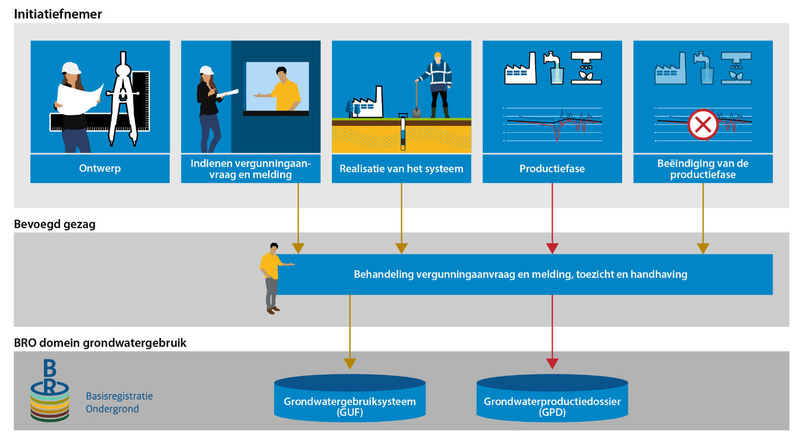
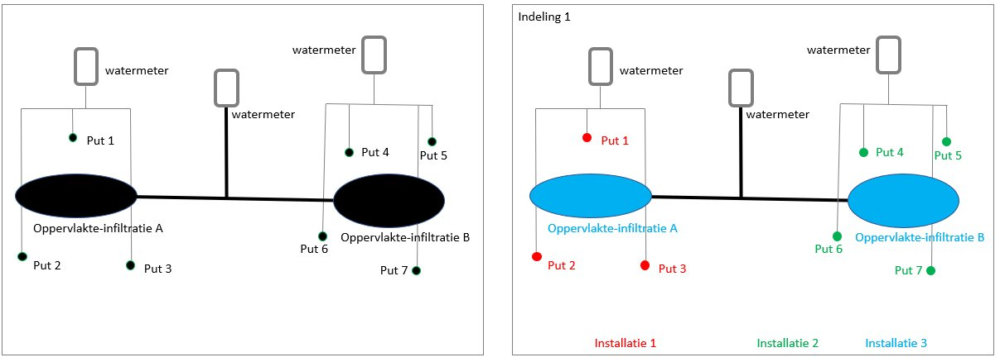
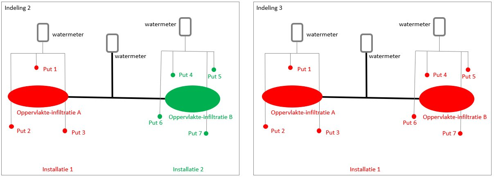
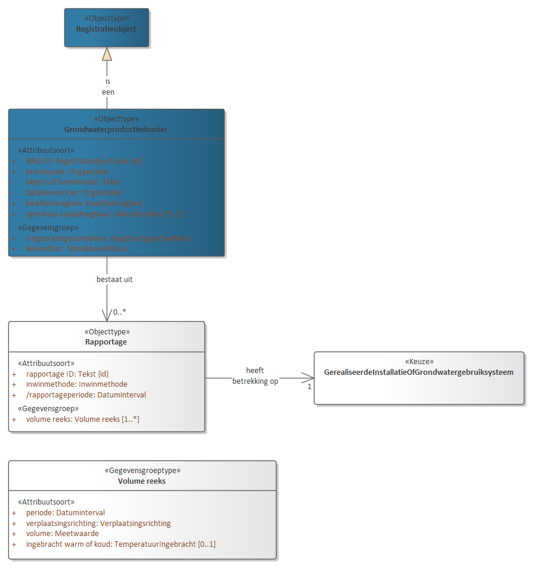
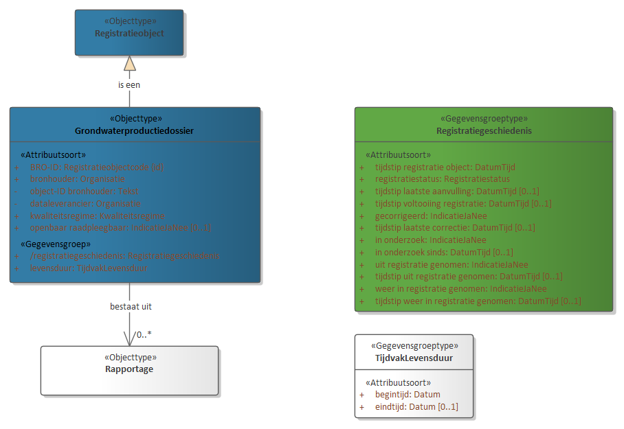
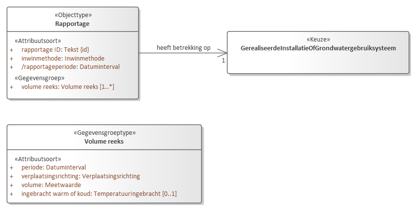
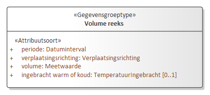
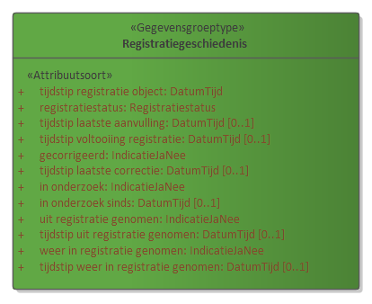
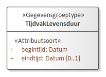

Creative Commons Attribution 4.0 International Public License (CC-BY)
Samenvatting
Dit is een werkversie document waarvan de inhoud onvolledig is, incorrect kan zijn en op elk moment kan wijzigen.
Het is slechts geproduceerd om tooling voor BRO standaarden te testen. Hoofdstuk vijf is automatisch gegenereerd uit
een UML model dat nog in ontwikkeling is.
Status van dit document
Deze paragraaf beschrijft de status van dit document ten tijde van publicatie. Het is mogelijk dat er actuelere versies van dit document bestaan. Een lijst van Geonovum publicaties en de laatste gepubliceerde versie van dit document zijn te vinden op https://www.geonovum.nl/geo-standaarden/alle-standaarden.
Dit is de definitieve versie van het informatiemodel. Wijzigingen naar aanleiding van consultaties zijn doorgevoerd.
1. Inleiding
Dit onderdeel is niet normatief.
1.1 Doel en doelgroep
In de basisregistratie ondergrond (BRO) wordt een aantal typen gegevens geregistreerd, de registratieobjecten.
Een catalogus is de gegevensdefinitie van een registratieobject en beschrijft welke gegevens van het object in de BRO zijn opgeslagen.
Het document is bedoeld voor alle gebruikers van de BRO en moet duidelijk maken welke gegevens er precies in het systeem zitten.
Aan aanleverende partijen moet het vertellen welke gegevens in de basisregistratie ondergrond moeten komen en aan welke eisen die moeten
voldoen, en aan afnemende partijen welke gegevens zij in de basisregistratie ondergrond mogen verwachten.
Het document is voor een breed publiek bedoeld en de informatie moet naast precies ook begrijpelijk zijn.
1.2 Totstandkoming
Een catalogus is het resultaat van een proces van standaardisatie dat geruime tijd in beslag kan nemen. De standaardisatie is een open proces waarin de belanghebbende partijen actief betrokken worden. Het eindresultaat wordt door de wetgever vastgesteld in een ministeriële regeling.
In bepaalde gevallen is de verscheidenheid aan gegevens van een object zo groot, dat er eerst deelverzamelingen worden gedefinieerd. Het standaardisatieproces wordt dan per deelverzameling doorlopen. De deelverzamelingen worden zo gekozen dat de gegevens die in de bijbehorende catalogus worden beschreven, direct na vaststelling aan de BRO kunnen worden aangeleverd. Wanneer er deelverzamelingen worden onderscheiden, komt de catalogus van het registratieobject dus gefaseerd tot stand. Omdat inzichten in de loop van de tijd kunnen wijzigen kan het aan het eind van het hele proces nodig blijken revisies door te voeren om ongewenste verschillen tussen deelverzamelingen weg te nemen.
1.3 Beheer
Een vastgestelde catalogus (zoals op wetten.nl gepubliceerd) wordt met het daarbij horende deel van het systeem van de basisregistratie ondergrond in gebruik genomen. De eerste formeel vastgestelde catalogus (zoals op wetten.nl gepubliceerd) krijgt het versienummer 1.0. Verwacht mag worden dat er na enige tijd behoefte gaat ontstaan aan gegevens die nog niet in de catalogus zijn opgenomen.
De beheerder hanteert drie typen versies voor een wijziging van een standaard. Bijvoorbeeld: versie 2.1.0 (=X.Y.Z):
X-wijzigingen Deze wijzigingen veranderen de structuur van de standaard. Hierdoor zijn X-wijzigingen niet backwards compatible.
Frequentie: maximaal 1 keer per 2 jaar.
Y-wijzigingen Dit zijn wijzigingen die niet de structuur veranderen. Dit kunnen bijvoorbeeld updates zijn of inhoudelijke aanpassingen aan objecten, attributen of waardelijsten of de reikwijdte van de standaard. Deze wijzigingen zijn backwards compatible.
Frequentie: maximaal 1 keer per jaar.
Z-wijzigingen Dit zijn in feite oplossingen van fouten of verbeteringen van technische aard. Deze wijzigingen zijn backwards compatible.
Frequentie: maximaal 2 keer per jaar.
In een jaar waarin een X-wijziging plaats vindt zullen er op hetzelfde registratieobject geen y-wijzigingen plaatsvinden. Als er een X- of een Y-wijziging in een jaar aan de orde is, wordt er geen z-wijziging gepland.
De versie van de catalogus met inleiding (zoals hier gepubliceerd) volgt voor de normatieve stukken volledig de versie op wetten.nl. Wijzigingen aan niet normatieve teksten in dit document vallen altijd onder Z-wijzigingen en zullen maximaal 2 keer per jaar plaatsvinden.
1.4 Leeswijzer
Hoofdstuk 1 geeft het doel en de doelgroep van een catalogus.
Hoofdstuk 2 behandelt enkele algemene aspecten van het BRO-systeem en begrippen van algemene aard.
Hoofdstuk 3 is de toelichting op de gegevensdefinitie van het registratieobject die in de ministeriële regeling is opgenomen.
Hoofdstuk 4 vertelt hoe de gegevensdefinitie is opgebouwd en welke aspecten van de gegevens daarin worden beschreven.
Hoofdstuk 5 geeft de inhoud weer van het eerste artikel van de ministeriële regeling en dat is het deel waarin de definitie is opgenomen van het registratieobject, van de delen waaruit het is opgebouwd, de entiteiten, en van de eigenschappen van die delen, de attributen.
Hoofdstuk 6 geeft de inhoud weer van het tweede artikel van de ministeriële regeling en dat is het deel waarin de uitbreidbare waardelijsten staan waarnaar in hoofdstuk 5 verwezen wordt.
2. Algemene kenmerken en begrippen
Dit onderdeel is niet normatief.
2.1 Opzet van de landelijke voorziening
De landelijke voorziening van de basisregistratie ondergrond is een systeem dat een schakel vormt in een informatieketen. Aan het begin van de keten staan bestuursorganen die opdracht geven tot de productie van gegevens, of zelf gegevens produceren. Die bestuursorganen worden bronhouders genoemd. De geproduceerde gegevens worden door een dataleverancier geleverd aan de beheerder van het systeem, de registerbeheerder. De bronhouder is verantwoordelijk voor de levering van gegevens. Hij kan besluiten zelf dataleverancier te zijn of andere partijen een machtiging voor levering te verlenen. De beheerder van de landelijke voorziening van de BRO registreert de aangeleverde gegevens en levert ze voor (her)gebruik door aan allerlei afnemers.
De opzet van het systeem moet begrepen worden vanuit de verantwoordelijkheden die in de keten zijn belegd. De aangeleverde gegevens vallen onder de verantwoordelijkheid van de bronhouder en de registerbeheerder mag die gegevens niet veranderen. De registerbeheerder moet echter wel gegevens toevoegen om het systeem te kunnen beheren en hij kan gegevens toevoegen om de afnemers goed van dienst te kunnen zijn.
Bij wet is geregeld dat de basisregistratie ondergrond zo wordt opgezet dat er onderscheid bestaat tussen de gegevens die aan de registerbeheerder zijn aangeleverd en de gegevens die de registerbeheerder aan de afnemers verstrekt. Het systeem valt uiteen in twee grote deelsystemen, het register brondocumenten ondergrond en de registratie
ondergrond ().
Een geheel van gegevens dat door of onder verantwoordelijkheid van een bronhouder wordt aangeleverd, wordt een brondocument genoemd. De brondocumenten worden in het register brondocumenten ondergrond opgeslagen. De gegevens uit de brondocumenten worden samen met de gegevens die de registerbeheerder toevoegt in de registratie ondergrond vastgelegd. De registratie ondergrond is het deelsysteem dat gebruikt wordt voor uitgifte.
Figuur 1De twee grote deelsystemen van de landelijke voorziening van de BRO.
Met deze opzet verkrijgt het systeem de nodige flexibiliteit. Zo kan een object in de registratie ondergrond gegevens bevatten die uit meer dan één brondocument afkomstig zijn en bij uitgifte kunnen gegevens van verschillende objecten met elkaar gecombineerd worden. Ook is het mogelijk met het brondocument gegevens op te slaan die alleen voor de bronhouder en de aanleverende partij van belang zijn.
De catalogus dekt alle gegevens die opgenomen zijn in de registratie ondergrond. Verreweg de meeste gegevens komen uit de brondocumenten die de dataleverancier aanlevert en een paar gegevens komen voort uit de overdracht van een brondocument aan de registerbeheerder. Aan de aangeleverde gegevens worden enkele gegevens door de registerbeheerder toegevoegd. Als een gegeven is toegevoegd door de BRO wordt dat in de beschrijving expliciet vermeld.
Alle gegevens in de registratie ondergrond worden uitgegeven, maar niet alle afnemers kunnen alle gegevens geleverd krijgen. De gegevens die niet aan alle afnemers worden uitgeleverd zijn de gegevens die alleen nodig zijn in de communicatie tussen de registerbeheerder enerzijds en de dataleveranciers en bronhouders anderzijds.
2.2 Registratieobject
Het registratieobject is dé eenheid in de data-architectuur van de basisregistratie ondergrond. Voor de registerbeheerder is het de elementaire bouwsteen van het systeem dat hij moet beheren.
Een registratieobject verwijst naar een eenheid van informatie die onder de verantwoordelijkheid van één bronhouder valt en die met een bepaald doel is of wordt gemaakt. Het is in directe of indirecte zin gedefinieerd in de ruimte en dat wil zeggen dat een registratieobject een plaats op het aardoppervlak heeft of dat het gekoppeld is aan een ander type registratieobject met een plaats op het aardoppervlak.
Een registratieobject is niet alleen in de ruimte maar ook in de tijd gedefinieerd. Het leven van een registratieobject begint op het moment dat de gegevens zijn geregistreerd en dat is zo kort mogelijk nadat de gegevens zijn geproduceerd. De levensduur van een registratieobject, en de veranderlijkheid van de gegevens verschilt van object tot object. Een grondwatermonitoringput kan tientallen jaren gebruikt worden voor het meten van grondwaterstanden en in de periode kunnen er nieuwe gegevens ontstaan. Dat betekent dat de gegevens van de put in de registratie ondergrond gedurende zijn hele levensduur bijgewerkt moeten kunnen worden. Aan de andere kant van het spectrum staan de objecten waarvan alle gegevens in een keer worden vastgelegd. Geotechnisch sondeeronderzoek is daar een voorbeeld van. Sondeeronderzoek is eenmalig onderzoek en het resultaat ervan kan al na een of enkele dagen aan de bronhouder worden overhandigd.
2.3 Registratiedomein
Registratieobjecten worden in de basisregistratie ondergrond gegroepeerd in domeinen. Vooralsnog worden zes domeinen onderscheiden:
bodem- en grondonderzoek
bodemkwaliteit
grondwatermonitoring
grondwatergebruik
mijnbouwwet
modellen.
De domeinen zijn vanuit het oogpunt van beheer van belang voor de ordening van het systeem. Daarnaast zijn zij nuttig in de communicatie met de partijen die bij de realisatie van het systeem betrokken zijn.
2.4 Kwaliteitsregime
In de basisregistratie ondergrond worden niet alleen gegevens geregistreerd die dateren van na de datum waarop de wet van kracht is geworden. Ook oudere gegevens zullen in de basisregistratie ondergrond worden opgenomen. De noodzaak daartoe ligt in de wet verankerd. Die schrijft voor dat de gegevens uit de eerder bestaande systemen DINO en BIS zo veel mogelijk naar de BRO moeten worden overgezet. Verder staat de wet toe dat bronhouders tot vijf jaar na de inwerkingtreding van de wet historische gegevens ter registratie mogen aanbieden.
Historische gegevens kunnen niet altijd voldoen aan de strikte regels die de BRO stelt. Zo kan het voorkomen dat voor gegevens die volgens de strikte regels van de BRO verplicht zijn, geen waarde bekend is. Om de verwerking van de twee categorieën gegevens naast elkaar mogelijk te maken, worden twee kwaliteitsregimes gehanteerd. Voor de aanlevering van gegevens volgens de strikte regels geldt het IMBRO-regime. Bij de aanlevering van historische gegevens wordt geaccepteerd dat een aantal formeel verplichte gegevens geen waarde heeft. Voor deze gegevens wordt het IMBRO/A-regime gehanteerd en dat kent dus minder strikte regels.
De introductie van de twee kwaliteitsregimes geeft de bronhouder gedurende een bepaalde periode een zekere mate van vrijheid. Het kan bijvoorbeeld praktisch blijken het IMBRO/A-regime te hanteren voor gegevens die weliswaar pas na de datum waarop de wet in werking is getreden zijn geproduceerd maar die voortkomen uit opdrachten die al voor die datum zijn gegeven. Ook kan het voorkomen dat historische gegevens wel aan alle strikte voorwaarden voldoen en dan is het wenselijk de gegevens onder IMBRO-regime aan te leveren.
De periode waarin de bronhouders die vrijheid hebben wordt de transitieperiode genoemd. Over de duur van de transitieperiode zijn nog geen afspraken gemaakt. Na afloop van de transitieperiode kan alleen onder het strikte IMBRO-regime worden aangeleverd.
2.5 Formele en materiële geschiedenis
De basisregistratie ondergrond maakt deel uit van een stelsel van basisregistraties. Binnen het stelsel maakt men onderscheid tussen de materiële geschiedenis en de formele geschiedenis van een object.
Het begrip materiële geschiedenis wordt gebruikt om de veranderingen van eigenschappen van een object in de werkelijkheid aan te duiden. De materiële geschiedenis van een object wordt, voor zover relevant, in de registratie ondergrond vastgelegd. Niet alle registratieobjecten hebben een materiële geschiedenis, alleen de objecten met een levensduur, zoals de grondwatermonitoringput.
Het begrip formele geschiedenis wordt gebruikt voor de veranderingen van eigenschappen van een object in de registratie zelf. De meeste van die veranderingen gaan terug op een verandering van eigenschappen in de werkelijkheid, en de formele geschiedenis geeft aan wanneer de veranderingen in het systeem geregistreerd zijn. De formele geschiedenis kent ook gebeurtenissen die niet het gevolg zijn van een verandering in de werkelijke eigenschappen van een object. Die gebeurtenissen hebben betrekking op correcties. Het kan gebeuren dat een bronhouder erachter komt dat er een onjuiste waarde was geregistreerd en dan zorgt hij ervoor dat die verbeterd wordt. De registratie van de verbetering is een formele gebeurtenis.
Alle registratieobjecten hebben een formele geschiedenis en die wordt in de registratie ondergrond globaal vastgelegd in de registratiegeschiedenis van het object. Globaal wil zeggen dat de registratie ondergrond alleen een overzicht van de formele geschiedenis geeft. Voor de details moet het register brondocumenten ondergrond worden geraadpleegd.
Bij correctie wordt het betreffende gegeven in de registratie ondergrond overschreven en is de oude waarde van het gegeven niet meer direct beschikbaar voor de afnemers.
Zou een afnemer toch willen weten wat de eerdere foute waarde was, dan moet hij het register brondocumenten ondergrond raadplegen.
2.6 Coördinaten en referentiestelsels
De registratieobjecten van de basisregistratie ondergrond zijn gedefinieerd in de ruimte en dat wil zeggen dat een object zelf een plaats op het aardoppervlak, een locatie, heeft, of dat het gekoppeld is aan een ander type registratieobject met een locatie. Afhankelijk van het type registratieobject, wordt de locatie geregistreerd als een punt, een lijn of een vlak.
De locatie is de horizontale positie van een object. Voor bepaalde objecten is het voldoende dat alleen die horizontale positie wordt vastgelegd, maar voor veel objecten is ook de verticale positie van belang.
Posities worden vastgelegd in coördinaten en die zijn gedefinieerd in een bepaald referentiestelsel.
Er zijn verschillende typen referentiestelsels. Zo spreekt men van horizontale referentiestelsels (2D), verticale referentiestelsels (1D), gecombineerde referentiestelsels (2D, 1D) en werkelijke 3D referentiestelsels. In Nederland worden de horizontale en de verticale component van een positie in een afzonderlijk stelsel uitgedrukt. Het is vandaag de dag mogelijk met gps een positie in een 3D-referentiestelsel vast te leggen, maar de wens over te stappen op het gebruik van 3D is nog door geen van de partijen die betrokken zijn bij de basisregistratie ondergrond naar voren gebracht.
2.6.1 Referentiestelsels voor de horizontale positie
In Nederland zijn traditioneel verschillende referentiestelsels voor de horizontale positie in gebruik. In 2009, bij de eerste voorbereidingen voor de totstandkoming van de basisregistratie ondergrond, is al vastgesteld dat de verscheidenheid aan referentiestelsels de basisregistratie ondergrond voor problemen stelt omdat de registratie dan niet gemakkelijk op een eenduidige manier bevraagd kan worden. In de registratie ondergrond worden namelijk zowel gegevens met een locatie op land als gegevens met een locatie op zee geregistreerd. In de toenmalige praktijk werden op land en op zee verschillende stelsels gebruikt. Op land werd RD gebruikt en op zee waren verschillende stelsels in gebruik, waarvan WGS84 de belangrijkste was.
In 2009 was ook al bekend dat de Europese kaderrichtlijn INSPIRE de lidstaten vraagt de gegevens in Europa in één referentiestelsel uit te gaan wisselen, te weten in ETRS89. Met dat in gedachten, is het besluit genomen het BRO-systeem zo in te richten dat de registratie bevraagd gaat worden in ETRS89.
Het besluit wordt ondersteund door ontwikkelingen in Nederland. Sinds 2013 wordt er door de drie belangrijkste autoriteiten in Nederland op het gebied van referentiestelsels, het Kadaster, de Dienst der Hydrografie en Rijkswaterstaat, gewerkt aan de totstandkoming van nieuwe afspraken. Die afspraken moeten in lijn zijn met Europese afspraken en leiden tot heldere en eenduidige transformatieprocedures tussen referentiestelsels. Concreet betekent dit dat in Nederland op termijn het ETRS89-stelsel als standaard zal worden gehanteerd voor het uitwisselen van geo-informatie.
Het besluit betekent niet dat de gegevens ook in ETRS89 aangeleverd moeten worden. De basisregistratie ondergrond voorziet een periode van transitie waarin de aanleverende partijen zelf bepalen wanneer zij overstappen op ETRS89. Die periode zal naar verwachting jaren duren. Om de transitie te ondersteunen hanteert de basisregistratie ondergrond de volgende spelregels:
Gegevens mogen in een beperkt aantal referentiestelsels worden aangeleverd (RD, WGS84 en ETRS89).
Voor locaties op land wordt alleen RD of ETRS89 toegestaan.
Voor locaties op zee wordt alleen WGS84 of ETRS89 toegestaan.
De aangeleverde coördinaten worden in de registratie opgeslagen.
De aangeleverde coördinaten worden door de basisregistratie ondergrond getransformeerd naar
het ETRS89 referentiestelsel.
De getransformeerde coördinaten worden naast de aangeleverde coördinaten opgeslagen.
Bij de getransformeerde coördinaten wordt ook een identificatie van de gebruikte transformatiemethode opgeslagen.
Als de coördinaten in ETRS89 zijn aangeleverd, dan staat bij aangeleverde en getransformeerde positie dezelfde
informatie. Voor de locatie worden de getransformeerde coördinaten en de aangeleverde coördinaten beide
aan de afnemers verstrekt.
2.6.2 Referentiestelsels voor de verticale positie
In Nederland zijn voor verticale posities op land en zee verschillende referentiestelsels in gebruik. Op land wordt NAP gebruikt. Op zee is het in de voor de BRO relevante werkvelden gebruikelijk posities uit te drukken t.o.v. het gemiddeld zeeniveau (MSL, Mean Sea Level), maar posities t.o.v. LAT komen ook voor (Lowest Astronomical Tide). Dit laatstgenoemde stelsel wordt in de kaderrichtlijn INSPIRE genoemd als het stelsel van voorkeur voor het uitdrukken van verticale posities op zee. De basisregistratie ondergrond staat daarom op zee het gebruik van LAT naast MSL toe. Aangeleverde verticale posities worden door de BRO niet getransformeerd.
2.7 Gegevens op land en op zee
De basisregistratie ondergrond bevat gegevens over de ondergrond van Nederland en zijn zgn. Exclusieve Economische Zone (EEZ). De EEZ is het gebied op de Noordzee waar Nederland economische rechten heeft. Voor de referentiestelsels die bij aanlevering worden toegestaan, is het van belang te weten of de locatie van een object op zee of op land ligt.
Als scheidingslijn tussen land en zee wordt in de basisregistratie ondergrond de UNCLOS-basislijn gehanteerd. Het beheer van de basislijn valt onder de verantwoordelijkheid van de Dienst der Hydrografie van het ministerie van Defensie. Deze dienst voert die taak uit op basis van het Zeerechtverdrag van de Verenigde Naties uit 1982, dat in het Engels de United Nations Convention on the Law of the Sea (UNCLOS) heet.
De basislijn is opgebouwd uit de nulmeterdieptelijn zoals weergegeven op de zeekaarten en enkele rechte basislijnen die onder meer de monding van de Westerschelde en de wateren tussen de Waddeneilanden afsluiten.
De grens tussen land en zee is veranderlijk. De Dienst der Hydrografie stelt de grens opnieuw vast wanneer daartoe voldoende aanleiding is. De BRO hanteert bij inname de meest recente versie van de UNCLOS-basislijn en controleert daarmee of de juiste referentiestelsels gebruikt worden.
Tussen het moment waarop de locatie van een object wordt bepaald en het moment waarop het gegeven in de basisregistratie ondergrond wordt vastgelegd verloopt enige tijd. In die periode kan de positie van de UNCLOS-basislijn opnieuw zijn vastgesteld, en dan ontstaat er een discrepantie die bij het aanleveren van gegevens tot problemen kan leiden. Wanneer een dergelijk probleem zich voordoet, wordt de dataleverancier gevraagd contact op te nemen met de registratiebeheerder om gezamenlijk tot een oplossing te komen.
Een soortgelijk probleem doet zich voor met betrekking tot de begrenzing van Nederland, met name van het Nederlands territoir. De grenzen van Nederland worden ieder jaar op 1 januari vastgesteld door het Kadaster en vastgelegd in de basisregistratie kadaster. De BRO controleert bij inname of een object in het gebied ligt dat Nederland en zijn Exclusieve Economische Zone omvat, en hanteert daarbij de actuele grenzen. Ook bij problemen die te herleiden zijn tot een verandering in de begrenzing van Nederland, wordt de dataleverancier gevraagd contact op te nemen met de registratiebeheerder om gezamenlijk tot een oplossing te komen.
Binnen het domein Mijnbouwwet wordt de scheidingslijn tussen land en zee niet bepaald door de UNCLOS-basislijn, maar door een over zee lopende lijn die is vastgelegd in een bijlage bij de Mijnbouwwet. In de registratie ondergrond wordt deze lijn aangeduid als mijnbouwgrens. Voor de referentiestelsels die bij aanlevering worden toegestaan, is het binnen het domein Mijnbouwwet van belang te weten of de locatie van een object aan landzijde of aan zeezijde van de mijnbouwgrens ligt. Waar in voorgaande paragrafen ‘op land’ en ‘op zee’ is genoemd, houdt dat binnen het domein Mijnbouwwet in: aan landzijde respectievelijk aan zeezijde van de mijnbouwgrens.
2.8 Nauwkeurigheid van meetwaarden
Voor zinvol gebruik van gegevens met een gemeten, berekende of anderszins bepaalde waarde is het noodzakelijk dat de nauwkeurigheid van die gegevens bekend is.
Het begrip nauwkeurigheid laat zich in deze context het best omschrijven als de juistheid van een gemeten of berekende waarde. In de meeste processen waarin de waarde van een gegeven wordt bepaald, kan de afwijking van de daadwerkelijke waarde slechts via een kalibratie- of statistisch proces worden verkregen. Het resultaat omvat dan niet alleen een van de mogelijke realisaties van een meetwaarde maar ook informatie over de mogelijke spreiding van de meetwaarden.
De basisregistratie ondergrond gaat ervan uit dat de producenten van gegevens de metingen en berekeningen uitvoeren binnen een stelsel van afspraken dat binnen het desbetreffende werkveld is vastgelegd. Uitgangspunt is dat ook de eisen waaraan de gegevens op het gebied van nauwkeurigheid moeten voldoen in afspraken zijn vastgelegd. Dat kunnen praktische werkafspraken zijn, maar ook afspraken die vertaald zijn naar ISO- en NEN-normen. In de catalogus wordt in beginsel verwezen naar die normen. Waar deze normen niet voorzien in afspraken over de nauwkeurigheid, stelt de basisregistratie ondergrond hieraan specifieke eisen. Deze zijn dan vermeld in de catalogus.
2.9 Authentiek gegeven
In de wet is een aantal gegevens expliciet als authentiek aangeduid. Dit wordt in de catalogus nader uitgewerkt; verreweg de meeste gegevens zijn authentiek.
Met de aanduiding authentiek wordt, zoals geformuleerd in de memorie van toelichting op de wet, tot uitdrukking gebracht dat:
Het gegeven in samenhang met andere gegevens door een groot aantal bestuursorganen in verschillende processen wordt gebruikt en derhalve bestemd is voor informatie-uitwisseling tussen bestuursorganen;
de verantwoordelijkheid voor betrouwbaarheid van het gegeven eenduidig geregeld is;
het gegeven onderworpen is aan intern en extern kwaliteitsonderzoek, en
het gegeven zich leent voor verplicht gebruik door bestuursorganen en eenmalige verstrekking door burgers en bedrijven aan de overheid.
In de praktijk mag een gebruiker van de gegevens ervan uitgaan dat alle gegevens correct zijn. De catalogus moet de gebruiker alle informatie geven die voor een goed begrip daarvan nodig is.
Heeft een gebruiker echter gerede twijfel over de juistheid van een authentiek gegeven dan wordt verwacht dat hij de registerbeheerder daarvan op de hoogte brengt. Bestuursorganen zijn, bij gerede twijfel over de juistheid van een authentiek gegeven (of het ontbreken ervan), zelfs verplicht daarvan melding te maken.
Voor alle gegevens is aangegeven of ze authentiek zijn. Ook is voor alle gegevens aangegeven of ze aanwezig moeten zijn en een waarde moeten hebben. Dat laat zien dat er gegevens kunnen zijn die authentiek zijn maar geen waarde hoeven te hebben. Juist omdat er verplichtingen gelden t.a.v. authentieke gegevens, vraagt dit om een korte toelichting.
Wanneer een authentiek gegeven geen waarde heeft moet de gebruiker ervan uitgaan dat het gegeven niet is geproduceerd. Dat geval kan zich uiteraard alleen voordoen wanneer er vrijheid van beslissen bestaat bij de bronhouder of de producent.
Voor de duidelijkheid, als er wel een waarde is dan moet die ook in de BRO worden opgenomen. Bij gerede twijfel over het ontbreken van een waarde, moet een bestuursorgaan dat melden.
3. Grondwaterproductiedossier
3.1 Inleiding grondwatergebruik
Grondwater is een belangrijke bestaansbron. Voor uiteenlopende doelen wordt actief gebruik gemaakt van grondwater. Deels richt het gebruik zich op het grondwater zelf, maar bij ondiepe bodemenergie richt het gebruik zich ook op het warmte-leverend en -bufferend vermogen van de ondergrond en het zich daarin bevindende grondwater. Een goed zicht op het huidige gebruik van grondwater -in samenhang met het monitoren van grondwaterstanden en stijghoogtes- helpt om de effecten ervan te begrijpen en om nieuwe gebruiksaanvragen te kunnen beoordelen en zodoende het grondwater als belangrijke bestaansbron duurzaam te beschermen en beheren. Het registratiedomein Grondwatergebruik richt zich op de registratie en ontsluiting van informatie over de technische systemen die grondwater benutten. De belangrijkste focus in de gegevensdefinitie ligt daarbij op de locatie en diepte van het systeem en op het gebruik (hoeveelheid water en energie) van het grondwater. Dit zijn de gegevens met directe hergebruikswaarde.
Het domein Grondwatergebruik valt uiteen in twee registratieobjecten: Grondwatergebruiksysteem (GUF) en Grondwaterproductiedossier (GPD), dit wordt in de volgende paragraaf nader toegelicht. Het gebruik van grondwater is via wet- en regelgeving sterk gereguleerd. Tot 2022 is de Waterwet het wettelijk kader, vanaf 2022 is dit de Omgevingswet. Juridisch wordt daarbij onderscheid gemaakt tussen “onttrekking”; waarmee het oppompen van grondwater wordt bedoeld, “infiltratie”; waarmee het in de bodem brengen van water met het oog op latere onttrekking wordt bedoeld en “lozing”; waarmee het in de bodem brengen van water wordt bedoeld, zonder dat sprake is van latere onttrekking. Deze laatste vorm van grondwatergebruik (lozing) is buiten scope geplaatst. Ook het gebruik van ondergrond en grondwater voor opslag en onttrekking van bodemenergie is wettelijk gedefinieerd in de genoemde wetten. Gegevens van systemen die dieper dan 500 meter onder maaiveld liggen, worden binnen het registratiedomein Mijnbouwwet onder de registratieobjecten Mijnbouwwetvergunning en Mijnbouwwetconstructie geregistreerd. Daarnaast bevat de registratie uitsluitend informatie over de ondergrond van Nederland en haar Exclusieve Economische Zone (EEZ). De EEZ is het gebied op de Noordzee waar Nederland economische rechten heeft.
Onder het registratieobject Grondwaterproductiedossier wordt de grondwater'productie' van een grondwatergebruiksysteem vastgelegd, d.w.z. de daadwerkelijk onttrokken of ingebrachte hoeveelheden grondwater (hierna 'grondwaterproductiecijfers'). Gegevens over het indirecte gebruik van grondwater voor de opslag of onttrekking van bodemenergie middels een gesloten bodemenergiesysteem worden niet in het grondwaterproductiedossier geregistreerd. De aanwezigheid van een reeds geregistreerd grondwatergebruiksysteem in de basisregistratie ondergrond is voorwaardelijk aan de registratie van grondwaterproductiecijfers, omdat ieder grondwaterproductiedossier naar één grondwatergebruiksysteem verwijst. De duur van het grondwatergebruik is niet bepalend voor het al of niet registreren van de grondwaterproductiecijfers.
De regels omtrent de periodieke opgave van de grondwaterproductiecijfers richting bevoegd gezag zijn te vinden in artikel 6.11 van het Waterbesluit. Per 01-01-2022 geldt de Omgevingswet als juridisch kader. Welk onderdeel precies de relevante regels voor de grondwaterproductiecijfers zal bevatten, is op het moment van schrijven van deze catalogus nog niet bekend. Wel is helder dat Provincies, Waterschappen en Gemeenten en voor enkele specifieke situaties de Rijksoverheid (meer specifiek Rijkswaterstaat) als bevoegde gezagen in het grondwatergebruikdomein zijn aangewezen (Omgevingsbesluit art. 4.1.2 t/m 4.5). Vanuit die bevoegdheid leveren deze organisaties (of de door hen georganiseerde Omgevingsdiensten) zowel de informatie van grondwatergebruiksystemen als de grondwaterproductiedossiers aan. Het bronhouderschap voor BRO registratiedomein Grondwatergebruik is bij deze bevoegde gezagen belegd.
Voor het aanleveren van onttrokken of ingebrachte hoeveelheden grondwater gelden juridische voorschriften. Het werkveld heeft een uitwisselingsformaat voor deze gegevens ontwikkeld. Samen vormen de juridische voorschriften én de praktische werkafspraken het kader voor de registratie van onttrokken of ingebrachte hoeveelheden grondwater in de BRO. De voorliggende gegevensinhoud voldoet aan de eisen van een basisregistratie.
Het grondwaterproductiedossier kent een directe verwijzing naar één grondwatergebruiksysteem. De geografische en andere technische eigenschappen van het systeem zijn onderdeel van het registratieobject grondwatergebruiksysteem. Dat betekent dat in dit registratieobject uitsluitend de grondwaterproductiecijfers worden geregistreerd van grondwatergebruiksystemen die reiken tot een diepte van maximaal 500 meter beneden maaiveld.
Het domein grondwatergebruik in de basisregistratie ondergrond (BRO) omvat twee registratieobjecten:
Grondwatergebruiksysteem;
Grondwaterproductiedossier.
De voorliggende catalogus gaat over het registratieobject grondwaterproductiedossier.
In de technische landelijke voorziening van de basisregistratie ondergrond worden Engelstalige benamingen gehanteerd voor de registratieobjecten. Omwille van de aansluiting hiermee worden voor de registratieobjecten Engelstalige afkortingen gebruikt. In deze catalogus worden alleen de Engelstalige afkortingen en verder de Nederlandstalige termen gebruiken.
Grondwatergebruiksysteem wordt afgekort tot GUF (Groundwater Usage Facility);
Grondwaterproductiedossier wordt afgekort tot GPD (Groundwater Production Dossier).
Figuur 2De mogelijke samenhang tussen de twee registratieobjecten Grondwatergebruiksysteem (GUF) en Grondwaterproductiedossier (GPD) binnen het domein Grondwatergebruik. Onder het IMBRO-regime heeft de inhoud van het grondwaterproductiedossier meestal betrekking op het installatie-niveau van GUF. Onder het IMBRO/A-regime hebben deze gegevens meestal betrekking op het niveau van grondwatergebruiksysteem van GUF. In het figuur is met dunne lijnen aangegeven dat onder het IMBRO-regime een klein deel van de inhoud van het grondwaterproductiedossier betrekking zal hebben op het grondwatergebruiksysteem-niveau van GUF. Een klein deel van inhoud van de grondwaterproductiedossiers onder het IMBRO/A-regime zal betrekking hebben op het installatie-niveau van GUF.
Een grondwatergebruiksysteem betreft de constructie die gebruikt wordt om grondwater te onttrekken aan, en te brengen in de ondergrond. Ook zijn systemen opgenomen die niet direct gebruik maken van het grondwater zelf, maar die alleen indirect gebruik maken van het grondwater, namelijk van de warmtecapaciteit van het grondwater. Het registratieobject grondwatergebruiksysteem bevat gegevens die bij de vergunningverlening (in de beschikking) of in melding zijn vastgelegd over het ontwerp van het systeem. Daarnaast bevat dit registratieobject gegevens over het in de praktijk gerealiseerde systeem. Zowel de ontwerpinstallatie en haar onderdelen als de gerealiseerde installatie en haar onderdelen hebben een geometrie.
Een grondwaterproductiedossier omvat de gegevens van de periodieke opgave van de volumes (grond)water die over een zekere periode aan de ondergrond worden onttrokken of ingebracht. Deze gegevens worden op basis van een wettelijke plicht aan het bevoegd gezag gerapporteerd. Een grondwaterproductiedossier heeft zelf geen verticale positie en locatie maar bevat de relatie met de gerealiseerde installatie(s) waar de productiecijfers betrekking op hebben. Een grondwaterproductiedossier bevat daarmee indirect een locatie. Eén grondwaterproductiedossier kan relaties naar meerdere installaties bevatten waarbij deze installaties altijd onderdeel uitmaken van één grondwatergebruiksysteem. In het geval het historische gegevens van productiecijfers van een grondwatergebruiksysteem met meerdere installaties betreft, is vaak alleen bekend wat de productiecijfers van het gehele grondwatergebruiksysteem zijn, en is de uitsplitsing naar gerealiseerde installaties meestal niet bekend. In die gevallen wordt bij een grondwaterproductiedossier de relatie vastgelegd met het grondwatergebruiksysteem, en dus niet met de gerealiseerde installaties. Paragraaf 3.5 beschrijft de relatie tussen het grondwatergebruiksysteem en de grondwaterproductiecijfers van historische gegevens (IMBRO/A) in meer detail.
Een grondwaterproductiedossier en het grondwatergebruiksysteem waar dat grondwaterproductiedossier betrekking op heeft, vallen onder de verantwoordelijkheid van dezelfde bronhouder.
3.3 Inleiding grondwaterproductiedossier
3.3.1 Inleiding
Een Grondwaterproductiedossier (GPD) omvat de gegevens van de periodieke opgave van de volumes (grond)water die over een zekere periode aan de ondergrond worden onttrokken of ingebracht. Het grondwaterproductiedossier richt zich alleen op de feitelijk gebruikte hoeveelheid grondwater, gegevens met betrekking tot de opgeslagen en onttrokken warmte en koude (bij bodemenergiesystemen), zoals bijvoorbeeld temperatuurgegevens worden niet geregistreerd in het grondwaterproductiedossier. Het registratieobject grondwaterproductiedossier beantwoordt de vraag hoe het grondwater is gebruikt (onttrokken of ingebracht), hoeveel grondwater is gebruikt en in welke periode dat is geweest. De in de basisregistratie ondergrond te registreren informatie van grondwaterproductie ontstaat in het werkproces van de bevoegde gezagen. Paragraaf 3.3.2 beschrijft de opeenvolgende stappen van het proces waarin de gegevens ontstaan. Paragraaf 3.3.3 beschrijft een aantal belangrijke kenmerken van de gegevens over het grondwaterproductiedossier.
3.3.2 Het proces van gegevensverwerking
Het proces waarin gegevens van grondwatergebruiksystemen in de praktijk ontstaan, is schematisch weergegeven in de onderstaande figuur en wordt daaronder beschreven.

Figuur 3Het totstandkomingsproces van gegevens voor de registratieobjecten Grondwatergebruiksysteem (beige pijlen) en Grondwaterproductiedossier (rode pijlen) en de daarbij betrokken actoren.
Ontwerpen van nieuw aan te leggen grondwatergebruiksystemen worden door initiatiefnemers middels een vergunningaanvraag of melding aan het bevoegd gezag kenbaar gemaakt. Wanneer de vergunningaanvraag of de melding door het bevoegd gezag positief is beoordeeld, worden de ontwerpgegevens door het bevoegd gezag aan de BRO aangeleverd en bij het registratieobject Grondwatergebruiksysteem geregistreerd. Het grondwatergebruiksysteem wordt daarna 'volgens ontwerp' aangelegd. Het bevoegd gezag schrijft voor dat bepaalde gegevens uit de realisatiefase door de aanleggende partij worden geregistreerd en met het bevoegd gezag worden gedeeld. Dit kan gaan om afwijkingen van het ontwerp of om gegevens die pas bij de aanleg exact kunnen worden vastgesteld (zoals de filterdiepte). Dergelijke afwijkingen en detailinformatie dienen aan het bevoegd gezag te worden teruggekoppeld. Dergelijke aanvullende gegevens uit de realisatiefase dienen ook te worden geregistreerd in de BRO onder het registratieobject Grondwatergebruiksysteem. Tenslotte kunnen gedurende de levensfase van het systeem technische aanpassingen worden doorgevoerd en wordt het systeem uiteindelijk buiten bedrijf gesteld. Van deze belanghebbende wijzigingen wordt het bevoegd gezag op de hoogte gesteld. Het bevoegd gezag registreert een aantal van deze wijzigingen in het registratieobject Grondwatergebruiksysteem.
Gegevens over het feitelijke gebruik van grondwater worden door vergunningnemers periodiek aan het bevoegd gezag (te weten Provincies, Waterschappen en Rijkswaterstaat) geleverd. Het bevoegd gezag levert een deel van deze gegevens aan de BRO aan binnen het registratieobject Grondwaterproductiedossier. De juiste koppeling tussen de grondwaterproductie-gegevens en de gegevens van het grondwatergebruiksysteem is de verantwoordelijkheid van het bevoegd gezag.
3.3.3 Eigenschappen van grondwaterproductiecijfers die de gegevensinhoud van het registratieobject bepalen
Hieronder zijn de belangrijkste sturende kenmerken kort toegelicht. In de beschrijving van de gegevensinhoud (paragraaf 3.4) wordt per entiteit een nadere, specifieke toelichting gegeven.
3.3.3.1 Grondwaterproductie richt zich primair op grondwatergebruik
De primaire focus van het registratieobject grondwaterproductiedossier ligt bij de periodieke opgave van de volumes (grond)water die over een zekere periode aan de ondergrond worden onttrokken of ingebracht. In de BRO Programma Stuurgroep is besloten dat gegevens over de energieproductie buiten scope zijn. Omdat de circulatievloeistof van gesloten bodemenergiesystemen geen direct contact met het grondwater heeft, wordt van gesloten bodemenergiesystemen daardoor geen enkel gegeven in het registratieobject grondwaterproductiedossier opgenomen. Bij oppervlakte-infiltraties is door verdamping en neerslag niet precies bekend hoeveel water er in de ondergrond infiltreert. Wel is vaak bekend hoeveel water er, op installatieniveau wordt ingelaten. Het netwerk van infiltratieplassen en -kanalen vormt in dit geval de installatie. Dit ingelaten volume wordt, indien dit cijfer beschikbaar is, ook in het grondwaterproductiedossier geregistreerd.
3.3.3.2 De kwaliteit en nauwkeurigheid van de geregistreerde gegevens
Bij het gebruik van de gegevens uit de basisregistratie ondergrond moet de gebruiker kunnen vertrouwen op de geregistreerde gegevens. Dat roept de vraag op wat de kwaliteit en de nauwkeurigheid van de geregistreerde gegevens precies is. Grondwaterproductiecijfers worden deels met behulp van een watermeter vastgesteld. De watermeter meet het verpompte volume over een bepaalde periode. Een ander deel wordt geschat op basis van de draaiuren van de pomp en de capaciteit van de pomp of het debiet. Van agrarische onttrekkingen ten behoeve van bijvoorbeeld beregening is bekend dat deze voornamelijk in de laatste groep vallen. Het feit of het gemeten dan wel geschatte geregistreerde volumes betreft, wordt in het grondwaterproductiedossier vastgelegd. Naast dit kwaliteitskenmerk zijn in het grondwaterproductiedossier geen andere eigenschappen opgenomen om de kwaliteit van de gerapporteerde volumes te kunnen beoordelen. De controle en validatie van de productiecijfers is onderdeel van de Toezicht- en Handhavingstaken van het bevoegd gezag. Deze organisaties zijn verantwoordelijk voor de juistheid en betrouwbaarheid van de aangeleverde gegevens.
3.3.3.3 Periode van het geregistreerde volume
De periode waarover het gemeten gebruik wordt gerapporteerd, is wettelijk vastgelegd, evenals het moment waarop deze gegevens eenmaal per jaar aan het bevoegd gezag worden aangeleverd. Anders dan het wettelijk voorschrift aangeeft, is het in de dagelijkse praktijk al gemeengoed om de productiecijfers per maand te meten en te rapporteren aan het bevoegd gezag. In geval van kortlopend grondwatergebruik dient men de productiecijfers na afloop van de activiteit aan het bevoegd gezag aan te leveren. In de beschikking of afspraken met betrekking tot meldingen is de periode waarover het gemeten gebruik gerapporteerd wordt opgenomen. Volumes worden over de kleinst mogelijke, gerapporteerde periode geregistreerd in de basisregistratie ondergrond. Jaarvolumes worden alleen geregistreerd als er geen uitsplitsing naar kwartalen of maanden zijn gerapporteerd aan het bevoegd gezag. Indien de productiecijfers per maand beschikbaar zijn worden ze op dat niveau geregistreerd en niet (ook) op kwartaal en/of jaarniveau.
De gegevens in de basisregistratie ondergrond worden door diverse organisatie hergebruikt. Het is daarbij van belang dat deze gebruikers de juiste conclusies kunnen trekken over bijvoorbeeld het totaal onttrokken grondwater in een bepaald gebied, in een bepaalde periode. Om die reden is het van belang dat een volume, in een bepaalde periode onttrokken (of ingebracht) water, slechts één keer wordt geregistreerd in de basisregistratie ondergrond. Dat betekent dat als van een bepaalde installatie de maandvolumes worden geregistreerd in de basisregistratie ondergrond, daarnaast niet het totale jaarvolume geregistreerd mag worden.
3.3.3.4 Openbaarheid van de gegevens
In het kader van de Wet beveiliging netwerk- en informatiesystemen vallen drinkwaterbedrijven onder de vitale sectoren. Bronhouders kunnen daarom aangeven of grondwaterproductiegegevens van drinkwateronttrekkingsputten (geregistreerd in het Registratieobject Grondwatergebruiksysteem), niet openbaar te raadplegen zijn. In dat geval zal het gehele grondwaterproductiedossier van deze objecten aan een beperkte groep (door bronhouders aan te wijzen) gebruikers uitgeleverd worden. Voor overige gebruikers is geen enkel grondwaterproductiegegeven in te zien als open data.
3.4 Belangrijkste entiteiten
Een registratieobject is de belangrijkste eenheid van informatie in de basisregistratie ondergrond. Een registratieobject bestaat uit delen (entiteiten), en de delen hebben eigenschappen (attributen). In deze paragraaf wordt een beschrijvende toelichting geven op de gegevensinhoud van de belangrijkste entiteiten en hun eigenschappen. De expliciete definities zijn te vinden in de tabellen van de gegevensdefinitie in hoofdstuk 5. Als eerste wordt de hoofdentiteit beschreven, daarna de overige entiteiten.
3.4.1 Grondwaterproductiedossier
Het registratieobject Grondwaterproductiedossier bevat het geheel van gegevens van de periodieke opgave van de volumes (grond)water die over een zekere periode aan de ondergrond worden onttrokken of ingebracht. Een Grondwaterproductiedossier is een registratieobject met een levensduur. Het start en eindigt op een bepaald moment in de tijd. Dit tijdstip wordt vastgelegd tot op de dag nauwkeurig: met het domein Datum (zie de algemene inleiding: Domeinen). De begindatum van een Grondwaterproductiedossier is gelijk aan de begindatum van de periode waarop de eerste (oudste) rapportage betrekking heeft. De einddatum van een grondwaterproductiedossier is niet aanwezig zolang er nog periodiek volumes gerapporteerd worden aan het bevoegd gezag. De einddatum is alleen aanwezig wanneer het object in de werkelijkheid is beëindigd en er geen rapportages meer verwacht worden. De einddatum is gelijk aan de einddatum van de periode waarop de meest recente rapportage betrekking heeft.
Een grondwaterproductiedossier wordt gedurende de levensduur aangevuld met rapportages, zoals jaaropgaven. De eigenschappen van het grondwaterproductiedossier kunnen tijdens de levensduur niet veranderen.
De bronhouder van het registratieobject Grondwaterproductiedossier is het bevoegd gezag. De gegevens van het grondwaterproductiedossier die opgeslagen worden in de basisregistratie ondergrond worden (deels) door de meldings- of vergunningsplichtigen aangeleverd aan het bevoegd gezag.
3.4.2 Rapportage
Een grondwaterproductiedossier bestaat uit nul, één of meerdere rapportages. Een rapportage is bijvoorbeeld een jaaropgave van onttrokken en ingebrachte volumes water. In de basisregistratieondergrond bevat de entiteit Rapportage alle kenmerken van deze gerapporteerde volumes. Het registratieobject Grondwaterproductiedossier wordt als eerste geregistreerd, voordat er rapportages geregistreerd worden. Op dat moment zijn er dus nog geen rapportages aanwezig in de basisregistratie ondergrond. Na de start van de registratie worden er rapportages geregistreerd waarbij elke rapportage geïdentificeerd wordt door middel van een rapportage ID.
Een rapportage gaat over volumes water die in rapportageperiode worden onttrokken en/of in de bodem worden gebracht. Deze volumes worden in de meeste gevallen met behulp van een watermeter gemeten. In sommige gevallen ontbreekt echter een watermeter. In die gevallen wordt het volume berekend op basis van aannames en gegevens die wel bekend zijn, bijvoorbeeld door het aantal draaiuren van de pomp te vermenigvuldigen met het debiet. Deze berekening resulteert in een minder nauwkeurig volume dan een volume dat met een watermeter is gemeten. De inwinmethode wordt daarom in de basisregistratie ondergrond vastgelegd.
Elke rapportage heeft betrekking op een bepaalde rapportageperiode. Deze rapportageperiode wordt automatisch door de basisregistratie ondergrond afgeleid van de periode van de Volume reeksen (zie paragraaf 3.4.3). De begindatum wordt afgeleid van de oudste begindatum van de periode van de Volume reeksen die onderdeel uitmaken van de rapportage. De einddatum van de rapportageperiode wordt afgeleid van de meest recente einddatum van de periode van de Volume reeksen die onderdeel uitmaken van de rapportage. Betreft de rapportage bijvoorbeeld een jaaropgave van een grondwateronttrekking van 2024, dan bestaat de rapportage uit volume reeksen waarvan de oudste een begindatum zal hebben van 1 januari 2024 en de meeste recente zal een einddatum hebben van 31 december 2024. De rapportageperiode krijgt daarmee ook een begindatum van 1 januari 2024 en een einddatum van 31 december 2024. De rapportage kan bijvoorbeeld ook van een bronnering zijn waarbij de rapportageperiode bestaat uit bijvoorbeeld een begindatum van 15 maart 2024 en een einddatum van 20 juli 2024.
In de loop der tijd worden rapportages van verschillende maanden, jaren etc. gekoppeld aan dezelfde installatie. Deze installatie kan gedurende de levensloop wijzigen, bijvoorbeeld extra putten krijgen. Bij de installatie, als onderdeel van het grondwatergebruiksysteem, wordt de materiële geschiedenis vastgelegd. Dat betekent dat terug te vinden is op welk moment gedurende de levensloop er wijzigingen optreden. Ook is terug te vinden wat de begindatum is van alle putten. Met behulp van de rapportageperiode en deze materiële geschiedenis van het grondwatergebruiksysteem, kan een gebruiker achterhalen hoe de installatie eruit zag ten tijde van de rapportage.
3.4.3 Volume reeks
Een rapportage bevat één of meerdere volume reeksen. Een volume reeks bestaat uit een onafhankelijke variabele: de periode. Daarbij horen drie variabelen die afhankelijk zijn van deze periode. De afhankelijk variabelen zijn: de verplaatsingsrichting, het volume en de relatieve temperatuur van het ingebrachte water (ingebracht warm of koud). De periode is bijvoorbeeld de maand januari van 2025, dat betekent dat de periode bestaat uit een begindatum van 1 januari 2025 en een einddatum van 31 januari 2025. De verplaatsingsrichting geeft aan of het een volume betreft dat is onttrokken of een volume dat in de bodem is gebracht. Bij oppervlakte-infiltraties is niet bekend wat het volume is dat in de bodem infiltreert omdat een deel is verdampt en een deel via neerslag is toegevoegd. In de gevallen dat bij het bevoegd gezag bekend is wat het volume is van het water dat wordt toegevoegd aan de oppervlakte-infiltratielichamen, wordt dit in de basisregistratie ondergrond geregistreerd onder de verplaatsingsrichting: ingebracht.
Het volume wordt geregistreerd in kubieke meter. Het betreft in het bovenstaande voorbeeld het volume dat in januari 2025 is onttrokken of is ingebracht, afhankelijk van wat bij verplaatsingsrichting is geregistreerd.
Bij een open bodemenergiesystemen is het van belang om te registreren of het ingebrachte water relatief warm of relatief koud is ten opzichte van het onttrokken water. Het ingebrachte water is relatief warm tijdens koelingsbedrijf en relatief koud tijdens verwarmingsbedrijf. Het is mogelijk dat binnen een bepaalde periode het open bodemenergiesysteem is gewisseld van koelingsbedrijf naar verwarmingsbedrijf of andersom. In dat geval worden voor die periode drie reeksen geregistreerd: een met het volume dat is onttrokken, een met het volume dat tijdens koelingsbedrijf is ingebracht met daarbij de relatieve temperatuur van het ingebrachte water: warm. En een reeks met het volume dat tijdens verwarmingsbedrijf is ingebracht met daarbij de relatieve temperatuur van het ingebrachte water: koud. Hieronder een voorbeeld hoe de inhoud van een aantal Volume reeksen van een Rapportage eruit kunnen zien die betrekking hebben op de installatie van een open bodemenergiesysteem.
periode
januari (2025-01-01 / 2025-01-31)
verplaatsingsrichting
onttrokken
volume
37.000
periode
januari (2025-01-01 / 2025-01-31)
verplaatsingsrichting
ingebracht
volume
36.995
ingebracht warm of koud
koud
periode
april (2025-04-01 / 2025-04-30)
verplaatsingsrichting
onttrokken
volume
38.000
periode
april (2025-04-01 / 2025-04-30)
verplaatsingsrichting
ingebracht
volume
28.495
ingebracht warm of koud
koud
periode
april (2025-04-01 / 2025-04-30)
verplaatsingsrichting
ingebracht
volume
9.500
ingebracht warm of koud
warm
Voorbeeld: een deel van de volume reeksen van een rapportage over de rapportageperiode 2025.
Zoals ook in paragraaf 3.3.3.3 is beschreven, worden volumes per kleinst mogelijke periode, bijvoorbeeld per maand geregistreerd. De tijdseenheid van deze periode wordt in de beschikking vermeld. Volumes worden daarnaast niet als totaal jaarvolume geregistreerd.
3.4.4 Koppeling met Grondwatergebruiksysteem (GUF)
Eén rapportage heeft betrekking op één gerealiseerde installatie van een grondwatergebruiksysteem (GUF). Dit is ook beschreven in paragraaf 3.2. De gerealiseerde installatie is in de basisregistratie ondergrond geregistreerd, met een identificerend ID, als onderdeel van een registratieobject Grondwatergebruiksysteem, met een identificerend BRO-ID. Binnen het grondwaterproductiedossier kunnen meerdere rapportages zijn geregistreerd waarbij de verschillende rapportages betrekking kunnen hebben op verschillende gerealiseerde installaties. Rapportages van één grondwaterproductiedossier hebben echter allemaal betrekking op installaties van één (uniek) grondwatergebruiksysteem.
In bepaalde gevallen, bijvoorbeeld bij specifieke vergunningen, is het mogelijk dat een grondwatergebruiksysteem twee of meer gerealiseerde installaties bevat waarbij de productiecijfers niet zijn uitgesplitst naar installatie. Alleen in die gevallen heeft de rapportage betrekking op het grondwatergebruiksysteem als geheel. Ook historische gegevens onder het IMBRO/A kwaliteitsregime kunnen betrekking hebben op een grondwatergebruiksysteem in plaats van op een gerealiseerde installatie van een grondwatergebruiksysteem.
Eén rapportage heeft dus betrekking op één gerealiseerde installatie of op een grondwatergebruiksysteem (GUF) als geheel. Wanneer bijvoorbeeld in de beschikking staat dat er van een bepaald onderdeel productiecijfers gerapporteerd moeten worden, is het noodzakelijk de productie van dit onderdeel afzonderlijk te meten. Daarnaast is het noodzakelijk dit onderdeel als installatie te registreren in de basisregistratie ondergrond. Bij de registratie van een grondwatergebruiksysteem in de BRO (GUF), dient er bij de indeling van systeemonderdelen in installaties, rekening te worden gehouden met de onderlinge technische samenhang van de onderdelen. Maar ook moet er rekening worden gehouden met de samenhang bij rapportageverplichtingen.
Hieronder twee voorbeelden waaruit blijkt dat de technische samenhang en de samenhang van rapporteren een rol spelen bij de indeling van installaties in de basisregistratie ondergrond. Het eerste voorbeeld, zie figuur 4, toont een grondwatergebruiksysteem met 1 infiltratieplas en 3 onttrekkingsputten waarbij in de beschikking staat dat voor put 2 aparte rapportages aangeleverd moeten worden (schets links). Dat betekent dat put 2 in de BRO een aparte installatie moet vormen (indeling 1 en 2: in rood, installatie 1). De rapportage over de onttrokken volumes van put 2, wordt gekoppeld aan installatie 1. Put 2 vormt immers installatie 1. Afhankelijk van de technische samenhang tussen put 1 en 2 enerzijds en de oppervlakte-infiltratie anderzijds kunnen de putten 1 en 2 en de oppervlakte-infiltratie samen één installatie (indeling 2), twee installaties (indeling 1) of zelfs drie installaties vormen. De rapportage over de ingebrachte volumes van de oppervlakte-infiltratie wordt bij indeling 1 gekoppeld aan installatie 3.
Bij indeling 2 worden de ingebrachte volumes, samen met de onttrokken volumes van put 1 en 3, gebundeld in één rapportage en gekoppeld aan installatie 2. Eén rapportage kan meerdere volume reeksen bevatten en per volume reeks wordt aangegeven of het een onttrokken volume of een ingebracht volume betreft. In plaats van één rapportage voor zowel onttrokken volume als ingebracht volume, kan deze rapportage eventueel ook gesplitst worden in twee rapportages: één voor de ingebrachte volumes en één voor de onttrokken volumes, die beide gekoppeld zijn aan installatie.
Figuur 4Een grondwatergebruiksysteem (links) dat op twee verschillende manieren is ingedeeld: in drie (indeling 1) en twee (indeling 2) installaties.
Een tweede voorbeeld hieronder toont een grondwatergebruiksysteem met 2 infiltratieplassen en 7 onttrekkingsputten. Het grondwatergebruiksysteem is in dit voorbeeld op drie verschillende manieren ingedeeld. Bij indeling 1 vormen de putten 1 t/m 3 installatie 1. De rapportage van onttrokken volumes van deze putten gezamenlijk, wordt gekoppeld aan installatie 1. Hetzelfde geldt voor de putten 4 t/m 7. De rapportage van deze onttrokken volumes wordt gekoppeld aan installatie 2. Het is in dit voorbeeld niet bekend wat het volume ingebracht water van de oppervlakte-infiltraties A en B afzonderlijk is. Alleen het totale volume van oppervlakte-infiltratie A en B samen is bekend. Bij indeling 1 is ervoor gekozen om de oppervlakte-infiltraties A en B samen onder te brengen in installatie 3. De rapportage van het ingebrachte water via oppervlakte-infiltratie A en B wordt gekoppeld aan installatie 3.
Bij indeling 2 is ervoor gekozen, vanwege de technische samenhang, om oppervlakte-infiltratie A onder te brengen bij installatie 1 en oppervlakte-infiltratie B bij installatie 2. Het volume ingebracht water van de twee oppervlakte-infiltraties kan echter niet worden gesplitst over de twee installaties. Bij deze indeling moet ervoor gekozen worden om de rapportage van het volume ingebracht water, van oppervlakte-infiltraties A en B gezamenlijk, te koppelen aan, dus op het niveau van, het grondwatergebruiksysteem. Aan installaties 1 en 2 worden alleen de onttrokken volumes gekoppeld.
Bij indeling 3 zijn alle onttrekkingsputten en oppervlakte-infiltraties gebundeld in één installatie: installatie 1. Alle onttrokken en ingebrachte volumes worden gekoppeld aan installatie 1. Bij deze indeling worden de onttrokken volumes van put 1 t/m 7 bij elkaar gevoegd en kan er op basis van de rapportages geen onderscheid meer gemaakt worden tussen de volumes van put 1 t/m 3 en die van put 4 t/m 7. Wanneer in de beschikking staat dat er over put 1 t/m 3 apart gerapporteerd moet worden, kan deze indeling niet worden gebruikt.


Een grondwatergebruiksysteem (linksboven) dat op drie verschillende manieren is ingedeeld: in drie, twee en één installatie(s).
3.5 Impact kwaliteitsregime IMBRO/A
Bij de aanlevering van historische gegevens over productiecijfers wordt geaccepteerd dat een aantal formeel verplichte gegevens geen waarde heeft of onbekend is. Deze gegevens worden in de basisregistratie ondergrond geregistreerd onder het IMBRO/A kwaliteitsregime. Het is mogelijk dat deze productiecijfers uit het verleden, die betrekking hebben op een zeker grondwatergebruiksysteem, worden opgevolgd door productiecijfers die wel voldoen aan het IMBRO kwaliteitsregime. Het kwaliteitsregime is een attribuut dat geen materiële geschiedenis kent. Daarom worden de productiecijfers die betrekking hebben op een zeker grondwatergebruiksysteem op de tijdlijn gesplitst in een grondwaterproductiedossier met een kwaliteitsregime IMBRO/A en een apart grondwaterproductiedossier met een kwaliteitsregime IMBRO. Vanaf het moment dat de productiecijfers aangeleverd kunnen worden in het IMBRO kwaliteitsregime (uiterlijk de datum van wettelijke inwerkingtreding), wordt het grondwaterproductiedossier met de historische gegevens met een IMBRO/A kwaliteitsregime afgesloten en wordt een nieuw grondwaterproductiedossier gestart.
Een grondwaterproductiedossier dat onder kwaliteitsregime IMBRO is geregistreerd, kan betrekking hebben op zowel een grondwatergebruiksysteem met kwaliteitsregime IMBRO als IMBRO/A. Bij een IMBRO/A grondwaterproductiedossier is het het meest waarschijnlijk dat het betrekking heeft op een grondwatergebruiksysteem dat ook een IMBRO/A kwaliteitsregime heeft, maar in bepaalde gevallen is het mogelijk dat een grondwaterproductiedossier dat onder kwaliteitsregime IMBRO/A is geregistreerd betrekking heeft op een grondwatergebruiksysteem dat onder IMBRO is geregistreerd.
Bij een grondwatergebruiksysteem dat bestaat uit twee of meerdere installaties, is bij de productiecijfers in het verleden niet altijd onderscheid gemaakt tussen de verschillende installaties. De productiecijfers zijn vaak een optelling van de productiecijfers van de verschillende installaties. Daarom kan bij historische gegevens die onder IMBRO/A worden geregistreerd, worden aangegeven dat de rapportage betrekking heeft op een grondwatergebruiksysteem (GUF) in plaats van op een gerealiseerde installatie van een grondwatergebruiksysteem.
3.6 Samenhang en consistentie tussen verschillende registratieobjecten
De basisregistratie ondergrond dwingt af dat gegevens in andere registratieobjecten waarnaar verwezen wordt, ook daadwerkelijk geregistreerd zijn. Dat betekent dat vanuit het grondwaterproductiedossier alleen verwezen kan worden naar een grondwatergebruiksysteem en een gerealiseerde installatie die in de basisregistratie ondergrond zijn geregistreerd.
3.7 INSPIRE
Het doel van de Europese kaderrichtlijn INSPIRE is het harmoniseren en openbaar maken van ruimtelijke gegevens van overheidsorganisaties ten behoeve van het milieubeleid. Het registratieobject grondwaterproductiedossier valt onder de INSPIRE. Om die reden moeten de gegevens in het registratieobject geschikt gemaakt worden voor uitwisseling volgens de INSPIRE-standaard. De gegevensinhoud van het grondwaterproductiedossier past het beste bij het INSPIRE-thema Environmental Monitoring Facilities (EF). Voor het gegevensmodel van dit registratieobject zal een mapping gemaakt worden op het gegevensmodel van INSPIRE-thema EF. De inhoud van deze mapping is geen onderdeel van deze catalogus.
4. Opbouw van de gegevensdefinitie
Dit onderdeel is niet normatief.
4.1 De gegevensdefinitie
De gegevensdefinitie vormt het hart van de catalogus en geeft een beschrijving van alle gegevens van het registratieobject. Eerst wordt de definitie van het registratieobject gegeven inclusief de plaatjes van het zgn. domeinmodel, en vervolgens de definities van de entiteiten waaruit het object is opgebouwd met de eigenschappen van die entiteiten, de attributen. De entiteiten worden op volgorde van de nummers in het domeinmodel behandeld. De volgende aspecten van de gegevens worden vastgelegd:
De Nederlandse naam van het gegeven.
Of het gegeven van het type entiteit of het type attribuut is, met in het laatste geval van welke entiteit het een attribuut is.
Eventueel de herkomst van het gegeven, in het uitzonderlijke geval de herkomst anders is dan de BRO.
De definitie van het gegeven.
Eventueel de herkomst van de definitie, in het uitzonderlijke geval de definitie een andere herkomst heeft dan de BRO.
De kardinaliteit van een attribuut, en dat geeft aan hoe vaak het attribuut voorkomt.
De aanduiding of een attribuut al dan niet authentiek is (juridische status).
De naam van het domein voor de waarden van het attribuut, met afhankelijk van het type domein nadere informatie over de waarden.
Eventueel de naam van het domein van het attribuut voor IMBRO/A, wanneer het uitzonderlijke geval zich voordoet dat er voor IMBRO/A een ander domein geldt dan voor IMBRO.
Eventueel de regels die in aanvulling op de kardinaliteit en de bepalingen van het domein gelden en door de basisregistratie ondergrond in controles zijn opgenomen, bijvoorbeeld om de consistentie van de inhoud van een brondocument vast te stellen.
Eventueel de regels die voor IMBRO/A gelden, wanneer het uitzonderlijke geval zich voordoet dat er voor IMBRO/A aanvullende regels gelden.
Eventueel de aanduiding dat de waarde van het attribuut mag ontbreken, wanneer het uitzonderlijke geval zich voordoet dat de waarde van het attribuut mag ontbreken.
Van attributen waarvan de waarde mag ontbreken de omschrijving van de reden waarom de waarde mag ontbreken.
Eventueel de aanduiding dat het gegeven wordt afgeleid door de basisregistratie ondergrond, in het uitzonderlijke geval het gegeven wordt afgeleid.
Eventueel een toelichting om aanvullende informatie te geven over de betekenis van het gegeven of de reden waarom het is opgenomen.
Van attributen van objecten met een materiële geschiedenis de aanduiding of het attribuut al dan niet een materiële geschiedenis kan hebben.
De gegevensdefinitie dekt de beide kwaliteitsregimes die worden onderscheiden, IMBRO en IMBRO/A. Het kwaliteitsregime IMBRO is leidend en bij het opstellen van de gegevensdefinitie is geprobeerd de verschillen tussen de twee regimes zo klein te houden. Het streven is een object altijd in termen van dezelfde gegevens te beschrijven en voor IMBRO/A alleen aanvullende regels te formuleren en extra waarden toe te staan. Bij uitzondering kan het echter nodig zijn gebleken voor IMBRO/A aparte entiteiten, attributen of domeinen te definiëren.
4.2 Domeinen
Domeinen
Een domein beschrijft welke waarden mogelijk zijn voor een attribuut (zie bijv. Aantal of Code).
Sommige domeinen zijn samengesteld uit twee of meer elementen die in samenhang betekenisvol zijn. Een voorbeeld van een samengesteld domein dat in de BRO bestaat is Datuminterval. Datuminterval bestaat uit twee elementen, beide van het domein Datum (jaar, maand en dag), namelijk een begindatum en een einddatum.
Bij een attribuut kunnen ook twee of meer domeinen mogelijk zijn. Voor dit attribuut geldt dat verschillende domeinen valide zijn, er kan echter bij aanlevering van de gegevens altijd maar één van de domeinen gekozen worden.
In de gegevensdefinitie worden in dat geval een attribuut gemodelleerd waarvan het domein dat de mogelijke waarde beschrijft een keuze is tussen twee of meer domeinen. Dit maakt het mogelijk waar in het domeinmodel normaal gesproken maar één mogelijkheid bestaat, een opsomming te geven van meerdere mogelijke domeinen, waarbij altijd precies één van deze mogelijkheden wordt gebruikt. Een voorbeeld van een dergelijke keuze domein is het domein Organisatie.
De domeinen die in de gegevensdefinitie worden gebruikt worden hieronder toegelicht.
4.2.1 Code
Een code is een opeenvolging van cijfers, van letters of van cijfers en letters met een bepaalde opbouw en met een specifieke betekenis. Een code heeft gewoonlijk een betekenis die ook buiten de basisregistratie ondergrond geldt. Een code wordt uitgegeven door een verantwoordelijke instantie. Om de opbouw van een code weer te geven wordt gebruik gemaakt van de letters C en N. De letter C staat voor character (Eng.) en duidt een letter aan, de letter N staat voor number (Eng.) en duidt een cijfer aan. Een code heeft een bepaalde naam.
Het domein wordt volledig gespecificeerd door met de naam van de code ook de opbouw mee te geven. Uit de definitie van het attribuut zelf moet blijken wat de specifieke betekenis is van de code. In het domeinmodel wordt het domein aangeduid met zijn naam.
4.2.2 Gemeten waarden
Meetwaarden worden gebruikt voor grootheden. De waarde van een grootheid is een getal met een bepaalde opbouw en een bepaalde eenheid. Voor de waarde van grootheden worden twee domeinen gebruikt. Een voor een waarde waarvan de nauwkeurigheid altijd hetzelfde is (Meetwaarde) en een voor een waarde waarvan de nauwkeurigheid varieert (Meetwaarde in machten) en dat is het geval wanneer de nauwkeurigheid voor kleine getallen anders is dan de nauwkeurigheid voor grote getallen omdat een ander apparaat of methode is gebruikt.
De basisregistratie ondergrond gebruikt voor de eenheden de codes uit het UCUM (Unified Code for Units of Measure)-systeem. In bijzondere gevallen is de eenheid dimensieloos.
4.2.2.1 Meetwaarde
Het domein Meetwaarde wordt gebruikt wanneer de nauwkeurigheid van de waarde altijd hetzelfde is.
Het is een rationaal getal met een bepaalde opbouw. Het aantal cijfers voor het scheidingsteken is variabel maar begrensd. Het aantal cijfers achter het scheidingsteken ligt vast.
Het domein wordt volledig gespecificeerd door met de aanduiding meetwaarde ook de opbouw (Meetwaarde N.N) en de eenheid mee te geven. Gewoonlijk wordt de waardeverzameling verder ingeperkt door een bereik te specificeren. In het domeinmodel wordt volstaan met de algemene aanduiding Meetwaarde.
4.2.2.2 Meetwaarde in machten
Het domein Meetwaarde in machten wordt gebruikt wanneer de waarde een heel groot bereik heeft en de nauwkeurigheid voor kleine getallen anders is dan voor grote getallen. In dat geval wordt de meetwaarde uitgedrukt in machten. In de basisregistratie ondergrond wordt de meetwaarde in machten altijd uitgedrukt in een macht van tien. De notatie voor de meetwaarde in machten is (m . 10e). De m staat voor mantisse en is een meetwaarde, en de e staat voor de exponent.
De mantisse (m) is een rationaal getal met een bepaalde opbouw. Het aantal cijfers voor het scheidingsteken is in de basisregistratie ondergrond altijd 1. Het aantal cijfers achter het scheidingsteken ligt vast.
De meetwaarde wordt uitgedrukt in machten van tien (10e). De exponent (e) is in de basisregistratie ondergrond altijd een geheel getal.
Het domein wordt volledig gespecificeerd door met de aanduiding meetwaarde in machten ook de opbouw (meetwaarde 1.N in machten), de eenheid en het bereik van de machten mee te geven. Het bereik van de machten is vastgelegd in het waardebereik. De waardeverzameling wordt gewoonlijk verder ingeperkt door een bereik te specificeren. In het domeinmodel wordt volstaan met de algemene aanduiding Meetwaarde in machten.
Inname van gemeten waarden
In de praktijk is het moeilijk een meetwaarde zonder verandering van het ene systeem aan het andere door te geven. De basisregistratie ondergrond hanteert de definities binnen het systeem en bij uitgifte strikt om te borgen dat een meetwaarde zonder verandering kan worden doorgegeven.
Bij het vastleggen van eigenschappen is het niet altijd nodig getallen zo strikt te definiëren als de basisregistratie vraagt. De uitvoerders weten wel wat een getal zou moeten voorstellen en kunnen bijvoorbeeld accepteren dat een meetwaarde er een decimale nul bij krijgt of dat een getal een onbepaald aantal decimalen heeft. Om de uitvoeringspraktijk niet nodeloos te frustreren door getallen die niet aan de strikte definitie voldoen af te wijzen, hanteert de basisregistratie ondergrond bij het innemen van meetwaarden de volgende praktische regels:
Er zijn meer cijfers achter het scheidingsteken aanwezig dan gespecificeerd: het getal wordt afgekapt op het aantal dat in de gegevensdefinitie is gespecificeerd.
Er zijn minder cijfers achter het scheidingsteken aanwezig dan gespecificeerd: het getal wordt aangevuld met nullen tot het aantal dat in de gegevensdefinitie is gespecificeerd.
Er is geen scheidingsteken aanwezig: het scheidingsteken wordt toegevoegd en het getal wordt aangevuld met nullen tot het aantal dat in de gegevensdefinitie is gespecificeerd.
Het getal voor het scheidingsteken begint met een of meer nullen: de nullen worden genegeerd.
Er zijn meer cijfers vóór het scheidingsteken aanwezig dan gespecificeerd: de waarde wordt geweigerd.
Er is een scheidingsteken bij de exponent van de meetwaarde in machten aanwezig: de waarde wordt geweigerd.
4.2.3 Tekst
Het domein Tekst bestaat uit een stuk tekst van een bepaalde maximale lengte. De tekst mag alleen bestaan uit de tekens die voorkomen in de MES-1 set. De MES-1 set omvat 335 tekens en wordt gebruikt binnen de landen van de Europese Unie die een Latijns schrift kennen.
Het domein wordt volledig gespecificeerd door met de aanduiding tekst ook de maximale lengte mee te (Tekst N). In het domeinmodel wordt volstaan met de algemene aanduiding Tekst.
4.2.4 Tijdstip
Voor gegevens die over tijdstippen gaan worden twee domeinen gebruikt. Een voor een tijdstip tot op de seconde nauwkeurig (DatumTijd) en een voor een tijdstip tot op de dag nauwkeurig (Datum).
In ieder domein gaat het om de datum gemeten volgens de Gregoriaanse kalender. Bij het domein DatumTijd wordt de tijd gemeten volgens UTC en moet de tijdzone worden meegegeven. UTC is de mondiaal geaccepteerde standaardtijd en de opvolger van GMT (Greenwich Mean Time); de drie letters staan voor Coordinated Universal Time. Door de tijdzone mee te geven kan lokale tijd worden omgezet naar UTC.
De opbouw van de twee domeinen volgt dezelfde conventies, conform ISO 8601. Het eerste element in de opbouw staat voor het jaar, dan volgt de maand, enz., en het laatste element staat voor de tijdzone. Om de verschillende elementen aan te geven worden letters gebruikt: jaar (J), maand (M), dag (D), uur (U), minuut (M)en seconde (S), gevolgd door de tijdzone. Het aantal letters geeft de lengte aan.
Voor de meest uitgebreide variant van de opbouw, die van DatumTijd, wordt dit JJJJ-MM-DDTUU:MM:SS+UU:MM. De T is het teken dat de datum en het tijdstip op die datum scheidt. De + is het scheidingteken tussen het tijdstip en de tijdzone. Zoals uit de opbouw blijkt wordt de tijdzone in uren en minuten gegeven. De meeste tijdzones zijn overigens uitgedrukt in gehele uren (UU:00). In Nederland geldt Centraal Europese Tijd (UTC+1:00) of Centraal Europese Zomertijd (UTC+2.00).
4.2.4.1 Datum
Het domein Datum wordt gebruikt om een datum volgens de Gregoriaanse kalender tot op de dag nauwkeurig aan te geven. De opbouw is JJJJ-MM-DD.
Bij het domein Datum is het voldoende de naam te geven, omdat de opbouw altijd hetzelfde is. Gewoonlijk wordt de waardeverzameling verder ingeperkt door een bereik te specificeren.
4.2.4.2 DatumTijd
Het domein DatumTijd wordt gebruikt om een tijdstip volgens de Gregoriaanse kalender tot op de seconde nauwkeurig aan te geven. De opbouw is JJJJ-MM-DDTUU:MM:SS+UU:MM.
Bij het domein DatumTijd is het voldoende de naam te geven, omdat de opbouw altijd hetzelfde is. Gewoonlijk wordt de waardeverzameling verder ingeperkt door een bereik te specificeren.
4.2.4.3 OnvolledigeDatum
Voor gegevens die onder het kwaliteitsregime IMBRO/A aangeleverd worden, geldt een derde domein met vier keuzemogelijkheden.
De datum tot op de dag nauwkeurig, met als opbouw JJJJ-MM-DD
De datum tot op de maand nauwkeurig, met als opbouw JJJJ-MM
De datum tot op het jaar nauwkeurig, met als opbouw JJJJ
Geen datum bekend, met als vaste waarde onbekend.
De keuze die gemaakt wordt is gebaseerd op de beschikbaarheid van gegevens. De gebruiker moet ervan uit gaan dat de informatie zo nauwkeurig mogelijk is opgenomen. Bij het domein OnvolledigeDatum is het voldoende de naam te geven, omdat de vier keuzen en de opbouw altijd hetzelfde zijn.
4.2.5 Tijdinterval
Voor gegevens die over tijdintervallen gaan wordt in de huidige praktijk het domein Datuminterval gebruikt.
4.2.5.1 Datuminterval
Het domein wordt gebruikt voor een periode die tot op de dag nauwkeurig begrensd is. Het bestaat uit een begindatum en een einddatum, beide van het domein Datum (JJJJ-MM-DD) en de beide data vallen binnen de periode. Indien van toepassing wordt het bereik gegeven.
4.2.6 Waardelijsten
Een waardelijst is een lijst van de waarden die het attribuut mag hebben. Er zijn twee typen waardelijsten, waardelijsten die in de toekomst kunnen worden uitgebreid en waardelijsten die niet kunnen worden uitgebreid. Een waardelijst heeft een bepaalde naam en een specifieke inhoud.
4.2.6.1 Waardelijst niet-uitbreidbaar
Een niet-uitbreidbare waardelijst wordt gebruikt wanneer uitbreiding niet mogelijk is. Alle waarden van de lijst staan vast.
Bij een niet-uitbreidbare waardelijst is het voldoende de naam te geven, omdat de inhoud altijd hetzelfde is. In de basisregistratie ondergrond worden drie niet-uitbreidbare waardelijsten gebruikt.
IndicatieJaNee
Waarde
ja
nee
IndicatieJaNeeOnbekend
Waarde
ja
nee
onbekend
Kwaliteitsregime
Waarde
IMBRO
IMBRO/A
4.2.6.2 Waardelijst uitbreidbaar
Een uitbreidbare waardelijst wordt gebruikt wanneer uitbreiding mogelijk moet zijn. Iedere waarde van de lijst heeft een specifieke betekenis (omschrijving) en geldt voor een bepaald kwaliteitsregime, IMBRO en/of IMBRO/A. Eventueel worden andere aspecten van de waarde vastgelegd.
Bij een uitbreidbare waardelijst wordt de naam van de lijst geven. De inhoud van de lijst is in een apart hoofdstuk van de gegevensdefinitie opgenomen.
4.2.7 Organisatie
Het domein Organisatie wordt gebruikt om de organisaties die een rol hebben in de basisregistratie ondergrond te identificeren. De invulling van het domein hangt af van waar de organisatie gevestigd is en voor de basisregistratie ondergrond gaat het daarbij om Nederland of een andere lidstaat van de Europese Unie.
In het geval de organisatie in Nederland gevestigd is, wordt het domein ingevuld met het gegeven dat een onderneming of de maatschappelijke activiteit van een rechtspersoon in het Handelsregister identificeert, het KvK-nummer. Het KvK-nummer is van het type code en de opbouw is NNNNNNNN.
Voor organisaties buiten Nederland wordt het domein ingevuld met het equivalent van het KvK-nummer in een handelsregister van een andere lidstaat van de Europese Unie dan Nederland, het EuropeesHandelsnummer. Het Europees handelsnummer, de zogenaamde EUID, is geïntroduceerd ten behoeve van de koppeling van handelsregisters. De code is gebaseerd op ISO 6523 en is opgebouwd uit een landcode, registeridentificatiecode, inschrijvingsnummer en controlegetal. De landcode is de 2-letterige code van ISO3166, de registeridentificatiecode is de identificatie van het nationale register omdat in sommige landen meerdere handelsregisters bestaan en het inschrijvingsnummer is het nummer waaronder de onderneming is ingeschreven in het betreffende register. Het controlegetal ter voorkomen van identificatiefouten wordt nog niet gebruikt. De opbouw per element is variabel en daarom is het Europees Handelsnummer in de BRO als domein Tekst 40 opgenomen.
Bij het domein Organisatie is het voldoende de naam te geven, omdat de twee keuzen en de opbouw altijd hetzelfde zijn.
4.3 Entiteiten van het type meetreeks
Een meetreeks is een type entiteit met een vaste ordening. Het wordt gebruikt om het verloop van een bepaalde eigenschap of eigenschappen vast te leggen die het gevolg is van de verandering van een bepaalde variabele, de zogenaamde onafhankelijke variabele. In de basisregistratie ondergrond is er altijd 1 onafhankelijke variabele, en dat is meestal de tijd maar kan ook een andere variabele zijn.
De meetreeks is een verzameling gemeten waarden van bepaalde eigenschappen in een bepaalde volgorde. Alle eigenschappen van de meetreeks worden volledig gespecificeerd. De eerste eigenschap is de onafhankelijke variabele op basis waarvan de metingen elkaar in oplopende volgorde opvolgen. Daarna volgen de afhankelijke variabelen.
Een meetreeks heeft een bepaalde naam. Alleen in het domeinmodel is de meetreeks aangeduid als Meetreeks.
4.4 Het domeinmodel
Het domeinmodel geeft een overzicht van de gegevens van het registratieobject en laat de onderlinge samenhang zien. Modellering van informatie kent verschillende invalshoeken. In de catalogus is het inhoudelijke perspectief gekozen omdat dat de meeste waarde heeft voor de mensen die de informatie moeten begrijpen. Een dergelijk model wordt in de basisregistratie ondergrond een domeinmodel genoemd. Uit het domeinmodel wordt een technisch model afgeleid dat meeweegt dat informatiesystemen efficiënt met elkaar moeten kunnen spreken. Voor het domeinmodel wordt de UML-notatie gebruikt. Met kennis van de gebruikte symbolen is het gemakkelijk te lezen.
Het domeinmodel kent een aantal vaste elementen die bij ieder registratieobject terugkomen. Een begrip van deze elementen vergroot de leesbaarheid van het domeinmodel en de catalogus. De elementen zijn: entiteiten, attributen, gegevensgroepen en relaties. Een entiteit is een onderscheidend geheel van eigenschappen die gezamenlijk betekenis hebben. Een entiteit heeft altijd een naam en een definitie. In het domeinmodel zijn de entiteiten te herkennen aan het begrip Objecttype.
In de entiteiten staan de namen opgesomd van de attributen, de eigenschappen van de entiteiten, met daarachter de naam van de bijbehorende waardenverzameling (domein) en de kardinaliteit. Bij attributen is de kardinaliteit alleen opgenomen wanneer die ongelijk is aan 1. Overigens moet de kardinaliteit altijd in samenhang met de regels die in de definitie van het gegeven zijn opgenomen worden begrepen. De kardinaliteit en de regels bepalen samen of een gegeven al dan niet aanwezig is. De figuren laten ook zien welke attributen alleen aan de dataleverancier en de bronhouder worden uitgeleverd. In het domeinmodel zijn de attributen te herkennen aan het begrip Attribuutsoort.
Soms zijn een aantal attributen gegroepeerd in een groep, aangeduid als gegevensgroep. Het blijven attributen van de entiteit, maar de inhoudelijke definiëring van de gegevensgroep staat elders. Gegevensgroepen kunnen bij meerdere entiteiten terugkomen.
Het domeinmodel laat daarnaast ook zien hoe entiteiten aan elkaar gerelateerd zijn. Een beschrijving van deze relatie is opgenomen bij de bron-entiteit van de relatie. Een relatie heeft altijd een richting en in de meeste gevallen loopt deze van bron naar doel. In het plaatje van een domeinmodel heeft de relatie een naam en een kardinaliteit. Om de leesbaarheid te vergroten staat de kardinaliteit bij de doelentiteit.
Bovenstaand voorbeeld is te lezen als: de entiteit Bepaling bevat één of meerdere metingen. Een meting bestaat uit een meetwaarde en meetconfiguratie-gegevens. De meetconfiguratie bestaat uit twee parameters.
4.5 Verplichte gegevens, verplichte waarden
De kardinaliteit en de regels bepalen samen of een gegeven
al dan niet aanwezig is. Voor een goed begrip van de
gegevensdefinitie is dat nog niet zorgvuldig genoeg
geformuleerd. In de praktijk van gegevensuitwisseling is het
namelijk mogelijk een attribuut op te nemen zonder waarde.
Verbijzonderd voor attributen is de juiste formulering daarom
dat de kardinaliteit en de regels samen bepalen of een attribuut
al dan niet aanwezig is en of een attribuut al dan niet een
waarde heeft.
Uitgangspunt is dat een attribuut dat aanwezig is een waarde
heeft. Een attribuut wordt alleen bij uitzondering zonder waarde
in de berichten opgenomen. Het onderstaande overzicht geeft
de vier mogelijkheden die voorkomen.
De kardinaliteit= [1] en er is geen aanvullende regel opgenomen. Dit betekent dat het gegeven altijd aanwezig is en altijd een waarde heeft.
De kardinaliteit= [1] en er is een aanvullende regel opgenomen die aangeeft waarom een waarde toch mag ontbreken. Dit betekent dat het gegeven altijd aanwezig is maar bij uitzondering en om een specifieke reden geen waarde kan hebben.
De kardinaliteit= [0..1] en er zijn 1 of meer aanvullende regels opgenomen. Dit betekent dat de regels bepalen of het gegeven wel of niet voorkomt en bepalen of het gegeven wel of geen waarde heeft.
De kardinaliteit= [0..1] en er is geen aanvullende regel opgenomen. Dit betekent dat het gegeven alleen aanwezig is als het een waarde heeft.
Voor de kardinaliteiten [0..*] en [1..*] geldt in essentie hetzelfde.
5. Gegevensdefinitie
5.1 Registratieobject
Naam
Registrationobject
Code
GPD
Definitie
Het geheel van gegevens dat betrekking heeft op een grondwaterproductiedossier dat
de periodiek gerapporteerde productiecijfers van een grondwatergebruiksysteem omvat,
welke ontstaan op basis van de wettelijke leverplicht aan het bevoegd gezag.
Populatie
De populatie grondwaterproductiedossier in de registratie ondergrond omvat alle productiecijfers
betreffende infiltraties, onttrekkingen en retourneringen, ongeacht gebruiksdoel of
grootte, van in de basisregistratie ondergrond geregistreerde grondwatergebruiksystemen.
Het registratieobject heeft een levensduur, waarbij er gedurende de levensduur, met
zekere regelmaat, nieuwe gegevens worden toegevoegd.
5.2 Het domeinmodel

Domeinmodel GPD conceptueel
5.3 Entiteittypen en attributen
5.3.1 Grondwaterproductiedossier

Type gegeven
Entiteit
Definitie
De gegevens die het grondwaterproductiedossier identificeren en inzicht gegeven in
de geschiedenis van het object voorafgaand aan opname in de registratie ondergrond.
5.3.1.1 BRO-ID
Type gegeven
Attribuut van Grondwaterproductiedossier
Definitie
De identificatie van een grondwaterproductiedossier in de registratie ondergrond.
Juridische status
Authentiek
Kardinaliteit
1
Domein
Naam
Registratieobjectcode
Type
Code
Opbouw
GPDNNNNNNNNNNNN
Toelichting
De basisregistratie ondergrond kent bij registratie automatisch de juiste waarde aan
het object toe.
5.3.1.2 bronhouder
Type gegeven
Attribuut van Grondwaterproductiedossier
Definitie
Het KvK-nummer van de maatschappelijke activiteit van de publiekrechtelijke rechtspersoon
die bronhouder is van de gegevens in de basisregistratie ondergrond.
Juridische status
Authentiek
Kardinaliteit
1
Domein
Naam
Organisatie
Regels
De organisatie moet binnen de basisregistratie ondergrond als bronhouder van grondwaterproductiedossier
bekend zijn.
Toelichting
Het gegeven is door de dataleverancier bij de overdracht meegegeven in het geval de
dataleverancier niet de bronhouder is.
5.3.1.3 object-ID bronhouder
Type gegeven
Attribuut van Grondwaterproductiedossier
Definitie
De identificatie die door of voor de bronhouder is gebruikt om het object in de eigen
administratie te kunnen vinden.
Juridische status
Niet-authentiek
Kardinaliteit
1
Domein
Naam
Tekst 200
Toelichting
Het gegeven wordt alleen uitgeleverd aan de dataleverancier en de bronhouder. Het
is in de registratie opgenomen om de communicatie tussen de registerbeheerder en de
bronhouder of dataleverancier te vergemakkelijken.
5.3.1.4 dataleverancier
Type gegeven
Attribuut van Grondwaterproductiedossier
Definitie
Het KvK-nummer van de onderneming of de maatschappelijke activiteit van de rechtspersoon
die het object aan de basisregistratie ondergrond heeft aangeleverd, of het equivalent
daarvan in een handelsregister van een andere lidstaat van de Europese Unie dan Nederland.
Juridische status
Niet-authentiek
Kardinaliteit
1
Domein
Naam
Organisatie
Regels
De organisatie moet binnen de basisregistratie ondergrond als dataleverancier van
grondwaterproductiedossier bekend zijn.
Toelichting
Het gegeven is door de dataleverancier bij de overdracht meegegeven. Het wordt alleen
uitgeleverd aan de dataleverancier en de bronhouder.
5.3.1.5 kwaliteitsregime
Type gegeven
Attribuut van Grondwaterproductiedossier
Definitie
De aanduiding van de kwaliteitseis waaraan de gegevens van het object voldoen.
Juridische status
Authentiek
Kardinaliteit
1
Domein
Naam
Kwaliteitsregime
Type
Waardelijst niet uitbreidbaar
Toelichting
Het gegeven is door de dataleverancier bij de overdracht meegegeven.
5.3.1.6 openbaar raadpleegbaar
Type gegeven
Attribuut van Grondwaterproductiedossier
Definitie
De indicatie die aangeeft of het objecttype Grondwaterproductiedossier voor alle gebruikers te raadplegen is.
Juridische status
Authentiek
Kardinaliteit
0..1
Domein
Naam
IndicatieJaNee
Type
Waardelijst niet uitbreidbaar
Regels
Het attribuut moet aanwezig zijn wanneer het attribuut primair gebruiksdoel van de entiteit Gebruiksdoel systeem van het Grondwatergebruiksysteem waarop dit Grondwaterproductiedossier betrekking heeft gelijk is aan openbareDrinkwatervoorziening. Het attribuut mag niet aanwezig zijn in alle andere gevallen.
Toelichting
Indien dit nee is, is dit Grondwaterproductiedossier niet voor alle gebruikers te raadplegen in het kader van de Wet beveiliging netwerk-
en informatiesystemen.
5.3.1.7 registratiegeschiedenis
Type gegeven
Gegevensgroep van Grondwaterproductiedossier
Definitie
De gegevens die de geschiedenis van het object in de registratie ondergrond markeren.
De gegevens staan niet in een brondocument maar worden automatisch door de basisregistratie
ondergrond gegenereerd.
5.3.1.8 levensduur
Type gegeven
Gegevensgroep van Grondwaterproductiedossier
Definitie
De periode, bestaande uit de datum waarop het grondwaterproductiedossier in de werkelijkheid
ontstaat (begintijd) en de datum van de definitieve beëindiging van het grondwaterproductiedossier (eindtijd).
De eindtijd is gelijk aan de meest recente einddatum van rapportageperiode.
Toelichting
De begintijd is gelijk aan de datum waarop de oudste gerapporteerde periode start.
De eindtijd is alleen aanwezig wanneer er geen aanvullende rapportages over het grondwatergebruik
meer worden verwacht na deze datum. Deze datum is gelijk aan de datum waarop de meest
recente rapportageperiode eindigt.
5.3.1.9 gerelateerde rapportage
Type gegeven
Associatie van Grondwaterproductiedossier
Definitie
Een rapportage is onderdeel van een grondwaterproductiedossier
Juridische status
Authentiek
Kardinaliteit
0..*
Relatiesoort naam
bestaat uit
Relatierol naam
gerelateerde rapportage
Bron
Grondwaterproductiedossier
Doel
Rapportage
5.3.2 Rapportage

Type gegeven
Entiteit
Definitie
De kenmerken van productiecijfers die gezamenlijk, bij 1 rapportage zijn aangeleverd
aan het bevoegd gezag.
Toelichting
Een rapportage bevat bijvoorbeeld de kenmerken van 1 jaaropgave. De jaaropgave van
het volgende jaar wordt geregistreerd als een nieuwe rapportage.
5.3.2.1 rapportage ID
Type gegeven
Attribuut van Rapportage
Definitie
Het door de bronhouder aangeleverde identificerend gegeven van de rapportage.
Juridische status
Authentiek
Kardinaliteit
1
Domein
Naam
Tekst 40
Regels
De waarde van het attribuut moet uniek zijn binnen dit grondwaterproductiedossier.
5.3.2.2 inwinmethode
Type gegeven
Attribuut van Rapportage
Definitie
De methode waarmee de volumes van de Volume reeks zijn bepaald.
Juridische status
Authentiek
Kardinaliteit
1
Domein
Naam
Inwinmethode
5.3.2.3 rapportageperiode
Type gegeven
Attribuut van Rapportage
Definitie
De periode waarop de rapportage betrekking heeft. Deze periode wordt gevormd door
de datum van het begin van de periode en de datum van het einde van de periode.
Juridische status
Authentiek
Kardinaliteit
1
Domein
Naam
Datuminterval
Toelichting
De gegevens staan niet in een brondocument maar worden automatisch door de basisregistratie
ondergrond gegenereerd.
Bij jaaropgaven zal het een kalenderjaar betreffen. Bij tijdelijke onttrekkingen of
in de bodem brengen, zoals bijvoorbeeld bij bronneringen, komt het voor dat de rapportage
een specifieke periode bestrijkt.
5.3.2.4 volume reeks
Type gegeven
Gegevensgroep van Rapportage
Definitie
De kenmerken van de gerapporteerde volumes van deze rapportage in combinatie met de
bijbehorende periode.
5.3.2.5 gerelateerde installatie of grondwatergebruiksysteem
Type gegeven
Associatie van Rapportage
Definitie
Een gerealiseerde installatie of een grondwatergebruiksysteem is gekoppeld aan een
rapportage.
Juridische status
Authentiek
Kardinaliteit
1
Relatiesoort naam
heeft betrekking op
Relatierol naam
gerelateerde installatie of grondwatergebruiksysteem
Bron
Rapportage
Doel
Keuze uit
Regels
Het BRO-ID van het gerelateerde Grondwatergebruiksysteem en het gerealiseerde installatie
ID als onderdeel van het gerelateerde Grondwatergebruiksysteem moeten binnen de basisregistratie
ondergrond bekend zijn.
Het BRO-ID van het gerelateerde Grondwatergebruiksysteem moet bij alle Rapportages
van dit registratieobject gelijk zijn.
Toelichting
Bij historische gegevens die onder het IMBRO/A kwaliteitsregime zijn geregistreerd,
is vaak het grondwatergebruiksysteem als geheel gekoppeld aan de rapportage. Bij IMBRO
gegevens heeft de rapportage betrekking op de gerealiseerde installatie zodat, wanneer
het grondwatergebruiksysteem uit meerdere installaties bestaat, de productiecijfers
uitgesplitst worden naar de betreffende installatie; Elke installatie wordt aan een
eigen rapportage gekoppeld.
5.3.3 Volume reeks

Type gegeven
Entiteit
Definitie
De kenmerken van de gerapporteerde volumes in combinatie met de bijbehorende periode.
5.3.3.1 periode
Type gegeven
Attribuut van Volume reeks
Definitie
De periode waarop het bijbehorende volume betrekking heeft.
Juridische status
Authentiek
Kardinaliteit
1
Domein
Naam
Datuminterval
Regels
De begindatum mag niet liggen voor de begintijd van levensduur van Grondwatergebruiksysteem.
5.3.3.2 verplaatsingsrichting
Type gegeven
Attribuut van Volume reeks
Definitie
De richting waarin het water is verplaatst, waarop het gerapporteerde volume betrekking
heeft.
Juridische status
Authentiek
Kardinaliteit
1
Domein
Naam
Verplaatsingsrichting
Toelichting
Het kan onttrokken of in de bodem gebracht water betreffen. Indien sprake is van zowel
onttrekken als in de bodem brengen, worden beide apart geregistreerd. Indien het oppervlakte-infiltratielichamen
betreft, wordt dit aangegeven als 'ingebracht'.
5.3.3.3 volume
Type gegeven
Attribuut van Volume reeks
Definitie
Het totaal gemeten, of op een andere manier bepaalde volume over de betreffende periode.
Juridische status
Authentiek
Kardinaliteit
1
Domein
Naam
Meetwaarde
9.0
Eenheid
m3 (kubieke meter)
5.3.3.4 ingebracht warm of koud
Type gegeven
Attribuut van Volume reeks
Definitie
De relatieve temperatuur van het in de ondergrond teruggebrachte water ten opzichte
van de temperatuur van het onttrokken water.
Juridische status
Authentiek
Kardinaliteit
0..1
Domein
Naam
TemperatuurIngebracht
Regels
Het attribuut moet aanwezig zijn wanneer de waarde van het attribuut installatiefunctie van de entiteit gerealiseerde installatie van het registratieobject grondwatergebruiksysteem waar het volume betrekking op heeft gelijk is aan openBodemenergiesysteem en de waarde van het attribuut verplaatsingsrichting gelijk is aan ingebracht.
In alle andere gevallen ontbreekt het attribuut.
Toelichting
Bij een open bodemenergiesysteem wordt tijdens verwarmingsbedrijf relatief koud water
en tijdens koelingsbedrijf relatief warm water in de ondergrond terug gebracht ten
opzichte van het onttrokken water.
Een installatie kan in 1 maand wisselen van koelingsbedrijf naar verwarmingsbedrijf,
of omgekeerd. In dat geval wordt in deze maand zowel het ingebrachte, relatief warme
volume (tijdens koelingsbedrijf) als het ingebrachte, relatief koude volume (tijdens
verwarmingsbedrijf) apart geregistreerd waarbij door middel van dit attribuut het
onderscheid tussen beide wordt aangeduid.
5.3.4 Registratiegeschiedenis

Type gegeven
Entiteit
Definitie
De gegevens die de geschiedenis van het object in de registratie ondergrond markeren.
Toelichting
De gegevens staan niet in een brondocument maar worden automatisch door de basisregistratie
ondergrond gegenereerd.
5.3.4.1 tijdstip registratie object
Type gegeven
Attribuut van Registratiegeschiedenis
Definitie
De datum en het tijdstip waarop er voor het eerst gegevens van het object in de registratie
ondergrond zijn opgenomen.
Juridische status
Overig
Kardinaliteit
1
Domein
Naam
DatumTijd
5.3.4.2 registratiestatus
Type gegeven
Attribuut van Registratiegeschiedenis
Definitie
De actuele fase van registratie waarin het registratieobject zich bevindt.
Juridische status
Overig
Kardinaliteit
1
Domein
Naam
Registratiestatus
5.3.4.3 tijdstip laatste aanvulling
Type gegeven
Attribuut van Registratiegeschiedenis
Definitie
De datum en het tijdstip waarop de laatste aanvulling op de gegevens in de registratie
ondergrond is doorgevoerd.
Juridische status
Overig
Kardinaliteit
0..1
Domein
Naam
DatumTijd
Toelichting
Het gegeven is alleen aanwezig wanneer na de start van de registratie een aanvullende
productiecijfers zijn vastgelegd.
5.3.4.4 tijdstip voltooiing registratie
Type gegeven
Attribuut van Registratiegeschiedenis
Definitie
De datum en het tijdstip waarop alle gegevens van het object in de registratie ondergrond
zijn opgenomen.
Juridische status
Overig
Kardinaliteit
0..1
Domein
Naam
DatumTijd
Regels
Het gegeven is alleen aanwezig wanneer de registratiestatus de waarde voltooid heeft.
Toelichting
Het gegeven is alleen aanwezig als alle aan te leveren gegevens zijn geregistreerd.
Na dit tijdstip kunnen geen nieuwe gegevens meer ter registratie worden aangeboden.
Wel kunnen fouten in de registratie worden verbeterd.
5.3.4.5 gecorrigeerd
Type gegeven
Attribuut van Registratiegeschiedenis
Definitie
De aanduiding die aangeeft of er een verbetering in de gegevens van het object in
de registratie ondergrond heeft plaatsgevonden.
Juridische status
Overig
Kardinaliteit
1
Domein
Naam
IndicatieJaNee
Type
Waardelijst niet uitbreidbaar
5.3.4.6 tijdstip laatste correctie
Type gegeven
Attribuut van Registratiegeschiedenis
Definitie
De datum en het tijdstip waarop de laatste correctie in de gegevens van het registratieobject
is doorgevoerd.
Juridische status
Overig
Kardinaliteit
0..1
Domein
Naam
DatumTijd
Regels
Het al dan niet aanwezig zijn van het gegeven wordt bepaald door de waarde van het
attribuut gecorrigeerd.
5.3.4.7 in onderzoek
Type gegeven
Attribuut van Registratiegeschiedenis
Definitie
De aanduiding die aangeeft of het registratieobject door de registerbeheerder in onderzoek
is genomen.
Juridische status
Overig
Kardinaliteit
1
Domein
Naam
IndicatieJaNee
Type
Waardelijst niet uitbreidbaar
Toelichting
Wanneer een registratieobject in onderzoek is genomen betekent dit dat er gerede twijfel
bestaat over de juistheid van de geregistreerde gegevens en dat er een onderzoek is
gestart om vast te stellen wat de juiste gegevens zijn. Normaliter gaat hieraan een
melding van derden vooraf.
5.3.4.8 in onderzoek sinds
Type gegeven
Attribuut van Registratiegeschiedenis
Definitie
De datum en het tijdstip waarop de registerbeheerder het registratieobject in onderzoek
heeft genomen.
Juridische status
Overig
Kardinaliteit
0..1
Domein
Naam
DatumTijd
Regels
Het al dan niet aanwezig zijn van het gegeven wordt bepaald door de waarde van het
attribuut in onderzoek.
5.3.4.9 uit registratie genomen
Type gegeven
Attribuut van Registratiegeschiedenis
Definitie
De aanduiding die aangeeft of de gegevens van het registratieobject door de registerbeheerder
uit registratie zijn genomen.
Juridische status
Overig
Kardinaliteit
1
Domein
Naam
IndicatieJaNee
Type
Waardelijst niet uitbreidbaar
Toelichting
Wanneer de registerbeheerder een registratieobject uit registratie heeft genomen,
zijn de gegevens niet langer beschikbaar voor andere afnemers dan bronhouder en dataleverancier.
De registerbeheerder zal een registratieobject alleen bij hoge uitzondering uit registratie
nemen en alleen na akkoord van de bronhouder. Aan de beslissing gaat een proces van
zorgvuldige afweging vooraf en dat komt tot uitdrukking in de regel dat een registratieobject
slechts een keer uit registratie kan worden genomen.
5.3.4.10 tijdstip uit registratie genomen
Type gegeven
Attribuut van Registratiegeschiedenis
Definitie
De datum en het tijdstip waarop het registratieobject uit registratie is genomen.
Juridische status
Overig
Kardinaliteit
0..1
Domein
Naam
DatumTijd
Regels
Het al dan niet aanwezig zijn van het gegeven wordt bepaald door de waarde van het
attribuut uit registratie genomen.
5.3.4.11 weer in registratie genomen
Type gegeven
Attribuut van Registratiegeschiedenis
Definitie
De aanduiding die aangeeft of het object in de registratie ondergrond is opgenomen,
nadat het eerder uit registratie was genomen.
Juridische status
Overig
Kardinaliteit
1
Domein
Naam
IndicatieJaNee
Type
Waardelijst niet uitbreidbaar
Toelichting
De registerbeheerder kan een registratieobject eenmalig uit registratie nemen, en
die actie kan hij eenmalig ongedaan maken. Ook hiervoor geldt dat akkoord van de bronhouder
vereist is.
5.3.4.12 tijdstip weer in registratie genomen
Type gegeven
Attribuut van Registratiegeschiedenis
Definitie
De datum en het tijdstip waarop het object in de registratie ondergrond is opgenomen,
nadat het uit registratie was genomen.
Juridische status
Overig
Kardinaliteit
0..1
Domein
Naam
DatumTijd
Regels
Het al dan niet aanwezig zijn van het gegeven wordt bepaald door de waarde van het
attribuut weer in registratie genomen.
5.3.5 TijdvakLevensduur

Type gegeven
Entiteit
Definitie
De eigenschappen voor het vastleggen van het tijdsinterval van geldigheid van het
object in de werkelijkheid.
5.3.5.1 begintijd
Type gegeven
Attribuut van TijdvakLevensduur
Herkomst
NEN3610
Definitie
Tijdstip waarop het object in de werkelijkheid is ontstaan.
Herkomst definitie
NEN3610
Juridische status
Authentiek
Kardinaliteit
1
Domein
Naam
Datum
5.3.5.2 eindtijd
Type gegeven
Attribuut van TijdvakLevensduur
Herkomst
NEN3610
Definitie
Tijdstip waarop het object in de werkelijkheid niet meer geldig is.
Herkomst definitie
NEN3610
Juridische status
Authentiek
Kardinaliteit
0..1
Domein
Naam
Datum
Mogelijk geen waarde
Ja
6. Uitbreidbare waardelijsten
6.1 Inwinmethode
De lijst van mogelijke methoden voor het bepalen van de volumes die deel uitmaken
van de Volume reeks.
Waarde
IMBRO
IMBRO/A
Omschrijving
berekening
✔
✔
De volumes in de Volume reeks zijn bepaald door middel van een berekening op basis
van aannames en gegevens die wel bekend zijn, zoals het aantal draaiuren maal het
debiet van de pomp.
watermeter
✔
✔
De volumes in de Volume reeks zijn bepaald met behulp van een watermeter.
onbekend
✔
Het is onbekend hoe de volumes in de Volume reeks zijn bepaald (IMBRO/A kwaliteitsregime).
6.2 Registratiestatus
De lijst met de statussen waarin het registratieobject zich bevindt.
Waarde
IMBRO
IMBRO/A
Omschrijving
aangevuld
✔
✔
Het registeren van de gegevens van het object heeft na de start van de registratie
een vervolg gekregen. De gegevens in de registratie ondergrond zijn minimaal een keer
aangevuld met nieuwe gegevens.
geregistreerd
✔
✔
Het registeren van de gegevens van het object is gestart. De gegevens uit het eerste
brondocument zijn in de registratie ondergrond vastgelegd. Er zijn daarna geen nieuwe
gegevens geregistreerd.
voltooid
✔
✔
Het registeren van de gegevens van het object is voltooid. Alle gegevens zijn in de
registratie ondergrond vastgelegd en er kunnen geen nieuwe gegevens meer worden geregistreerd.
6.3 TemperatuurIngebracht
De lijst van de mogelijke relatieve temperatuur van het water dat in de ondergrond
wordt teruggebracht ten opzichte van het onttrokken water.
Waarde
IMBRO
IMBRO/A
Omschrijving
koud
✔
✔
Het in de ondergrond teruggebracht water is relatief koud ten opzichte van het onttrokken
water.
warm
✔
✔
Het in de ondergrond teruggebracht water is relatief warm ten opzichte van het onttrokken
water.
onbekend
✔
Het is onbekend wat de relatieve temperatuur is van het in de ondergrond teruggebracht
water (IMBRO/A kwaliteitsregime).
6.4 Verplaatsingsrichting
De lijst van mogelijke richtingen waarin het gerapporteerde volume aan water wordt
verplaatst.
Waarde
IMBRO
IMBRO/A
Omschrijving
ingebracht
✔
✔
Het gerapporteerde volume heeft betrekking op het water dat in de ondergrond is gebracht
of, in geval van oppervlakte-infiltraties, het volume dat wordt toegevoegd aan de
oppervlakte-infiltratie(s).
onttrokken
✔
✔
Het gerapporteerde volume heeft betrekking op het grondwater dat is onttrokken aan
de ondergrond.
 Algemeen contact:
Algemeen contact: